機率統計 -- 使用 R 軟體
陳鍾誠
2013 年 3 月
前言
序
機率統計是「自然科學」與「社會科學」都共同需要的數學語言，傳統上許多學校都會採用商用的 SPSS 或 SAS 等軟體作為課程實作的工具。但是這些軟體都是商用軟體，學生在家中很難合法安裝。
事實上，開放原始碼領域的「R軟體」比起 SPSS 或 SAS 毫不遜色，而且具有相當多的開放資源，已經成為學習機率統計的重要工具。在本書中，我們將使用 「R 軟體」進行機率統計的實作，讓學習者能以「實作印證理論」，加深學習的效果。
R 軟體當中預設就包含了各式各樣的機率模型，以及各種統計工具，可以讓讀者一邊學習，一邊用簡單的指令進行機率統計的實驗。透過這種學習方式，讀者可以透過程式實際體會理論的意義。舉例而言，當我們看到常態分配的機率模型時，我們可以直接使用下列指令來畫出常態分布，並且用程式產生符合常態分布模型的樣本，以便進行某種互動式的學習，用實驗體會常態分布的意義。
我很喜歡用武俠小說中的「氣宗與劍宗」與學術中的「理論與實務」相對比。氣宗的人一開始就學習一堆理論，直到內力充足以後才慢慢了解實務操作；而劍宗的人則是直接拿起劍就找人比試，在不了解理論的情況下直接出招，一開始進步很快，但到後來就會發現內功不夠深厚，遇到高手時總要吃虧的。
雖然我的求學過程比較像是氣宗的教育方式，但是最後寫出來的書卻往往像是劍宗的教材，或許這就是一種內心矛盾的反射，因為理論念得多了，就發現自己在實務上一竅不通，所以寫出來之後往往從實務出發，最後才回到理論進行印證。
在本書中，我們將採用「理論=>實務=>理論=>實務...」的循環，交替的說明原理與實務，我們會先給大家看一大堆「圖片」、「影片」甚至是「程式」，然後再回過頭來講解原理，透過這種方式，希望大家都能達到「氣劍合一」的境界。
陳鍾誠 2012/10/23 於 金門大學 資訊工程系
授權聲明
本書由 金門大學 創建，期中部分內容與圖片來自 維基百科，因此採用 創作共用：姓名標示、相同方式分享 之授權。
若您想要修改本書產生衍生著作時，至少應該遵守下列授權條件：
- 標示原作者姓名為 陳鍾誠 衍生自 維基百科 的作品。
- 採用 創作共用：姓名標示、相同方式分享 的方式公開衍生著作。
機率與統計
簡介
在現實的生活當中，有許多我們無法準確描述的現象，這些現象的出現包含了某種程度的隨機性。舉例而言，我們無法精確的預知明天是否會下雨、股票會漲或者會跌、匯率會如何波動，人會不會生病等等。
但是當這些現象出現的總體量很多的時候，我們就可以「統計」出該事件發生的「機率」，於是我們的天氣預報可以預測明天下雨的機率、我們也可以統計出股票漲跌的機率、人們生病的機率、或者某人買了一張彩券後中獎的機率等等。
因此，機率與統計可以說是一體的兩面，當我們知道某個基本事件的先驗機率1時，我們可以根據此一機率計算某個組合事件發生的機率。例如我們可以知道兩顆公平的骰子同時出現 6 點的機率是 1/36 ，而連續投擲公平的銅版五次，每次都是正面的機率為 1/32等。
但是當我們不知道基本事件的發生機率時，我們該怎麼辦呢？此時統計的價值就顯現出來了，我們可以先進行很多次的實驗，以便透過計算的方式算出某個「事件」的機率，這種統計方法就稱為「敘述統計」。接著我們可以根據這個統計的結果，推論出某些衍生事件的機率，或者推算出此一事件是否「可信」，這樣的統計就稱為「推論統計」。
如果用更數學化的語言來說，我們可以透過已知的「母體模型」，以及某些「母體參數」計算某個事件的機率，或者用電腦隨機產生這些事件。這種用參數與模型產生隨機事件的過程，可以用電腦的方是透過程式模擬產生，此時電腦其實是以機率的角度在模擬母體的運作方式，這樣的電腦模擬方法稱為「蒙地卡羅法」。
但是如果我們是在是先取得一群樣本之後，開始計算樣本的某個統計量是多少，這種計算就稱為「敘述統計」。如果我們進一步透過「敘述統計」的「統計量」去推估「母體的某個參數值應該是多少？」，這樣的推估方法就稱為「推論統計」。
下圖顯示了「母體、參數、樣本與統計量」之間的關係。

機率與統計之關係
如果我們精確知道母體的機率模型與參數，我們就完全掌握了母體的機率分布，這就是從機率角度的看法。但是在很多情況下我們無法清楚的知道母體的模型與參數，此時我們就可以採用「抽樣的方式」，從母體中取得或觀察到某些「樣本」，再透過這些樣本去計算出某些「敘述統計量」，接著再用這些統計量去推估母體的參數。
機率理論
舉例而言，假如我們已經某個銅版是公平的，也就是兩面的機率都是 1/2 ，那麼我們就可以直接透過「機率法則」計算某個序列，例如連續五次都投出正面的機率為 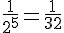 。
但是如果我們不知到銅版「正反面的機率」，那麼我們就必須改用「統計的方法」，例如連續投擲該銅版一千次，然後計算「正面與反面各為多少次」，接著再透過這些「正反面次數的統計量」，去推估某事件的出現機率。
假如我們投擲該銅版一千次的結果，發現正面出現 508 次，反面出現 492 次，那麼我們就可以推估「正面的機率為 0.508」，而「反面出現的機率為 0.492」，接著再去推估連續出現五次正面的機率為 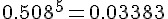 。
當然，機率的模型並不是都像擲骰子或銅版那樣簡單的，有時機率模型本身就有點困難。舉例而言，布瓦松 (Poisson) 分布是用來描述「一段連續時間內」某個隨機事件發生的次數，其離散機率密度函數如下所示。
如果沒有學過機率的話，相信一般人很難看懂該機率分布的意義。因此在本書的後序章節中，我們將會先介紹機率的法則與模型，以便讓讀者能先對這些機率模型所代表的意義有清楚的認識，然後再進入「敘述統計」與「推論統計」的數學世界，希望透過這樣的方法，讀者能更清楚的理解整個機率統計的數學理論，並且能用 R 程式的實作來印證這些理論。
統計理論
同樣的，統計理論也不只是算算出現次數這麼簡單的。舉例而言，當我們想知道某一組統計量是否「合理」時，我們會採用「信賴區間」的方式描述該組統計量的合理的母體參數範圍，以下是一個範例。
請計算出以下列樣本序列的「平均值之 95% 信賴區間」：
3.6146570 4.1440593 2.5726955 5.2325581 2.0635500
2.6294660 2.8541827 2.4816312 1.5836851 3.2193062
2.8205306 3.5037204 2.6107131 4.1870588 2.4506509
2.4849244 4.5343839 0.7606934 3.5219675 1.7019120這樣的計算顯然不是簡單的「計算出現次數」而已。要能進行「信賴區間」的計算，顯然我們必須學習更多的數學理論，才能知道如何計算，也才能清楚的掌握計算結果的意義。
應用
機率統計的應用涵蓋面非常的廣，從社會科學到自然科學都會用到，這是一門有著極強實用性的數學，很少數學像機率統計一樣有著如此強大的實用性。
在社會科學當中，我們會用機率統計來檢驗某個抽樣調查是否可信，某個抽樣調查顯示了何種意義等等？甚至像是社會科學領域的經典，塗爾幹的自殺論當中，即是採用機率統計的方法檢驗哪些因子會造成自殺現象的增加或減少等等，這些都是機率統計在社會科學上很明顯的應用案例。
在自然科學當中，學習生物或醫學的研究者也會透過機率統計來計算並研究某個藥物是否對特定疾病具有療效，或者某個檢測結果是否顯示該病人已經得到某種疾病。而學習電腦的程式設計者則可以透過機率統計模型進行「蒙地卡羅式的隨機模擬」，以便計算某個現象的機率。或者透過像「貝氏網路」這樣的機率模型以進行事件的機率計算，甚至是透過像「隱馬可夫鏈算法」(Hidden Markov Model) 或 EM 學習法 (Expectation-Maximization Algorithm) 等方法來學習某個機率模型與參數，以便讓程式能根據輸入樣本得到預測某些事件的能力。這些都是機率統計在自然科學上典型的應用案例。
R 軟體實作：簡介與基本操作
簡介
R 軟體是專門為了機率統計而設計的一種開放原始碼軟體，是免費的自由軟體。
市面上有許多與 R 類似的商用軟體，像是 SPSS, SAS, MINITAB, S-PLUS 等，但是這些軟體是要花錢買的。
R 軟體所使用的程式語言，被稱為 R 語言。
R 語言 與 S-PLUS 所使用的語言很類似，兩者都衍生自貝爾實驗室 Rick Becker, Allan Wilks, John Chambers 所創造的 S 語言，R 語言基本上是 GNU 所實作的 S 語言版本。
筆者篆寫此文時，R 所採用的 S 語言演化到了第四版，因此稱為 S4。
安裝
R 軟體的官方網站為 http://www.r-project.org/ ，其中有個相當重要的子網站稱為 CRAN (Comprehensive R Archive Network)，其網址為 http://cran.r-project.org/ ，您可以從這個網站中下載 R 軟體。
舉例而言，筆者使用的是 Windows作業系統，因此可以從以下網址下載到最新版的 R 軟體。

R 軟體下載頁面
舉例而言，筆者點選時為 Download R 2.15.2 for Windows 這個連結， 這會下載位於下列網址的檔案：
下載完畢後，請啟動該安裝檔，然後不斷按「下一步」就可以完成安裝了，過程非常簡單。
以下網址中的 Youtube 影片介紹了 R 軟體的下載、安裝、套件、網站、電子書等等，有興趣的朋友可以看看。
基本操作
為了說明 R 軟體的用法，並用以學習機率統計的概念，本系列文章將運用 R 來說明機率統計的理論，讓程式人可以透過實作學會機率統計，並且學會 R 軟體中的 S 語言。
為了避免太過枯燥，我們將不會先介紹 R 的基本語法，而是先用一系列的操作，讓讀者體會 R 的能力，然後再慢慢回到語言的教學上面。
以下是筆者用 R 軟體取樣後會出樣本統計圖的畫面，簡單的幾個指令就可以得到統計結果，是不是很棒呢？

圖、R 軟體執行畫面
第一個指令 ?rnorm 是要求 R 軟體查詢 rnorm 這個指令，R 軟體會顯示以下的說明網頁，您可以看到 rnorm 指令是與常態分部 (The Normal Distribution) 有關的。
圖、R 軟體的說明網頁
在 R 軟體中，對於任何一個機率分布 xxxx，都會實作出以 d, p, q, r 為字首的四種函數，例如對於常態分布 Normal Distribution (簡寫為 norm) 而言，就有 dnorm, pnorm, qnorm, rnorm 等四個函數，功能分別如下所示：
| 函數 | 說明 | 語法 |
|---|---|---|
| dnorm | 常態分布的機密度函數 | dnorm(x, mean = 0, sd = 1, log = FALSE) |
| pnorm | 常態分布的機分布函數 | pnorm(q, mean = 0, sd = 1, lower.tail = TRUE, log.p = FALSE) |
| qnorm | 常態分布的分位數函數 | qnorm(p, mean = 0, sd = 1, lower.tail = TRUE, log.p = FALSE) |
| rnorm | 常態分布隨機樣本函數 | rnorm(n, mean = 0, sd = 1) |
上表中的 mean 代表平均數，sd 代表 Standard Deviation (標準差)，n 是隨機產生的樣本個數，x 是隨機變數值，q 是累積值，p 是機率值，n 則是產生的樣本數。
您可以發現函數中，有些參數後面有 = 的指定 (像是 mean=0, sd=1, log=FALSE, ....)，有些卻沒有 (像是 x, q, p, n) 等，這些指定代表預設值，也就是如果您不指定這些參數的値，那麼將會自動代入預設值。
所以 rnorm(100) 代表 rnorm(100, mean = 0, sd = 1) 的意思，也就是該函數會產生平均數為 mean=0，標準差為 sd=1 的隨機樣本共 100 個。
關於這些函數的更詳細的說明如下表所示。
| 字首 | 函數意義 | 範例 | 說明 |
|---|---|---|---|
| d | 機率密度函數 | dnorm(1.96) | P(X=x) |
| p | 累積機率函數(CDF) | pnorm(1.96)=0.975 | P(X≤x) |
| q | 計算百分位數 | qnorm(0.975)=1.96 | q 系列為 p 系列的反函數; 所以 qnorm(pnorm(1.96)) = 1.96 |
| r | 抽樣函數 | rnorm(100) | 傳回 100 個標準常態分布的樣本向量 |
看懂這些函數之後，讓我們再度列出上圖的操作指令，仔細觀察看看每一個指令的意義。
?rnorm
x = rnorm(10000, mean=5, sd=4)
hist(x)指令 x = rnorm(10000, mean=5, sd=4) 代表我們要用平均值為 5, 標準差為 4 的常態分布，隨機產生 10000 個樣本，然後將這些樣本存到 x 陣列當中。
指令 hist(x) 代表要用這些樣本畫出統計的直方圖 (Histogram)，於是就畫出了圖中的那個長條狀圖形。
現在、請讀者試著看看下列操作，看看您是否能夠讀懂這些操作的意義。
rnorm(10, 3, 2)
> x
[1] 2.5810213 0.5399127 5.0005020 5.3402693 2.7900723 3.9638088 5.2119685
[8] 2.2209882 2.9935943 7.0308419
> a=dnorm(1.96)
> a
[1] 0.05844094
> b=pnorm(1.96)
> b
[1] 0.9750021
> c=qnorm(b)
> c
[1] 1.96
> d=rnorm(10)
> d
[1] -0.32913677 0.77788306 -1.80862496 0.16694598 -0.65656254 -1.76305925
[7] 1.18237502 0.19651748 -0.07898685 0.73970933
> 參考文獻
- 維基百科:機率論
- Wikipedia:Probability Theory
- 機率密度函數 PDF (連續) -- http://en.wikipedia.org/wiki/Probability_density_function
- 機率質量函數 PMF (離散) -- http://en.wikipedia.org/wiki/Probability_mass_function
- http://en.wikipedia.org/wiki/Statistics
- http://en.wikipedia.org/wiki/Descriptive_statistics
- http://en.wikipedia.org/wiki/Inferential_statistics
- http://en.wikipedia.org/wiki/Bayesian_Inference
- http://en.wikipedia.org/wiki/Correlation
- http://en.wikipedia.org/wiki/Analysis_of_variance
- http://en.wikipedia.org/wiki/Design_of_experiments
- http://en.wikipedia.org/wiki/Regression_analysis
- http://en.wikipedia.org/wiki/Student%27s_t-test
機率的概念
樣本空間
機率論中，樣本空間是一個實驗或隨機試驗所有可能結果的集合，而隨機試驗中的每個可能結果稱為樣本點。通常用 S、Ω 或 U 表示。例如，如果拋擲一枚硬幣，那麼樣本空間就是集合{正面，反面}。如果投擲一個骰子，那麼樣本空間就是 {1,2,3,4,5,6} 。
事件
一個事件是由樣本空間中的一個子集合，例如令 A 為骰子的點數為 {1, 3, 5} 的事件，其機率可以寫為 P(A) = P({1,3,5})。
機率的詮釋方法
某個事件的發生率，機率很低代表該事件不太可能出現 (很罕見，但是並非不會出現)，機率很高代表該事件非常可能發生。
機率的詮釋方式可以分為下列三種方式。
詮釋 1. 個人方式：(Personal Approach) : 完全按照個人直覺的解釋方式 (不客觀)。
詮釋 2. 相對頻率方式 (Relative Frequency Approach) ： 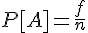
- 說明：f 為實驗中事件 A 出現的次數，n 為實驗進行的次數。 此方法乃是基於實驗觀察的結果的方式。
詮釋 3. 古典方式 (Classical Approach) ： 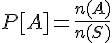
- 說明： n(A) 為事件 A 可能出現的次數 N(S) 為實驗可能進行的次數。此方法乃是將將實驗的可能出像 (outcome) 假設為等可能發生 (equaly likely)。
機率公理
一般人學習數學的時候都是從直覺概念開始的，例如我們小學的時候透過算幾個蘋果學到加法，然後用好幾排的蘋果學到乘法，接著就會背誦九九乘法表，然後在中學的時候導入變數的觀念，於是學會了聯立方程式的解法。
但是數學家們看數學往往是從公理系統開始的，透過公理系統進行推論以建立定理，然後推論出整個數學體系。讓我們學習一下數學家的想法，先來看看機率的公理系統有何特色。
以下三條法則是機率的基本公理：
公理 (1). 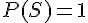
公理 (2). 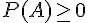
公理 (3).

公理 (1) 中的 S 代表機率的樣本空間，也就是所有可能發生的事件所形成的集合，這個集合的發生機率為 1，意義是沒有任何事件落在樣本空間之外。
公理 (2) 中的 A 代表任一事件，而 則代表任何事件的發生機率必須是正的，沒有負的機率值。
公理 (3) 中的 A1, A2 代表任兩個事件，如果 A1 與 A2 沒有交集，那麼其聯集發生的機率將會是其機率的總和，也就是 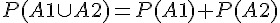 。
當這個公理系統確定下來之後，我們就可以透過這些法則進行一些基本的推論，舉例而言，我們應該可以很容易的證明以下這些定理。
定理 1. 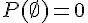
定理 2. 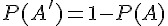
定理 3.

但是，這些定理又代表甚麼意義呢？其實從下列凡氏圖上可以很清楚的看得出來這些定理的直覺意義。

圖、兩個集合 A, B 的凡氏圖
基本上，機率系統是建構在集合論之上的一門數學系統，所以我們可以用集合論的凡氏圖來理解這些公理與定理的意義。下圖左方是兩個集合 A,B 所形成的凡氏圖，而右方則是三個集合 A, B, C 所形成的凡氏圖。

圖、三個集合 A, B, C 的凡氏圖
習題：機率定理的證明
習題 1 :
定理：證明
證明：
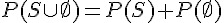 ; 根據公理 (3)
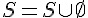 ; 根據集合論
; 根據公理 1
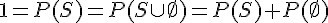 ; 根據集合論與公理 (3)
所以 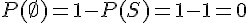
習題 2 :
定理：證明 P(A') = 1-P(A) ; 其中的 A' 代表 A 的補集，也就是
證明：
因為
; 根據 A' 的定義
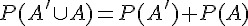 ; 根據公理 3
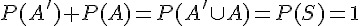 ; 根據公理 3 與公理1
所以
習題 3 :
定理：證明
證明：
因為
; 根據集合論 (用文氏圖可以理解其直覺意義)
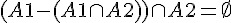 ; 根據集合論 (用文氏圖理解，只是為了方便)
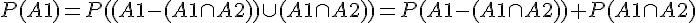 ; 根據公理 3
所以 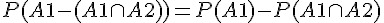
推論 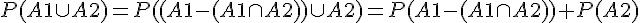
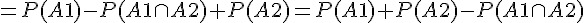 ;
所以 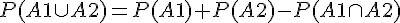
機率模型
因此、只要指定了所有可能事件的發生率，我們就可以完整的描述一個機率模型，舉例而言，日常生活中最常見的機率模型，大概就是丟銅板和擲骰子了， 以下是我們對這兩個機率系統的描述。
範例 1：丟銅板
在投擲銅板的機率過程中，其樣本空間 S={正, 反} ，
而其中一個常見的隨機變數 X ，是用來計算銅板的正面數量，
此時，P(正) = 0.5，而 P(反) = 0.5
範例 2：擲骰子
在投擲骰子的機率過程中，其樣本空間 S={1點,2點,3點,4點,5點,6點}，
此時，P(1點) = P(2點) = ... = P(6點) = 1/6。
所以，在一次擲骰子中，得到 5 點或者 6 點的機率，可以圖示如下。

圖、擲一次骰子 5 點或 6 點的機率
練習：R 軟體與機率密度函數
我們可以透過 R 軟體進一步瞭解機率密度函數的意義，舉例而言， R 當中有個 sample() 函數，我們只要使用該函數就可以模擬擲骰子或銅板的過程。
您可以用 「?函數」 的方式查詢某函數的功能，因此當我們在 R 軟體中鍵入 ?sample 時， R 軟體會輸出下列訊息：
> ?sample
starting httpd help server ... done然後就開啟下列的網頁畫面

圖、sample 函數的 Help 畫面
您可以看到 sample 函數的原型為 sample(x, size, replace = FALSE, prob = NULL)，於是可以用下列指令模擬投擲骰子十次的行為。
> sample(1:6, 10)
錯誤在sample(1:6, 10) :
cannot take a sample larger than the population when 'replace = FALSE'
> sample(1:6, 10, replace=TRUE)
[1] 3 2 4 4 4 2 6 3 3 3
> 您可以看到當我們用 sample(1:6, 10, replace=TRUE) 的指令時，可以正確的模擬出投擲骰子十次的隨機過程，得到 3 2 4 4 4 2 6 3 3 3 這個序列， 但是若我們沒有指定 replace=T (TRUE)，的時候，代表要採用取樣後不放回的方式，但是這種方式最多只能做六次，所以就得到失敗的結果。
不過如果我們指定的樣本數 k 在六個以下，那麼 sample(1:6, k) 是會成功的，以下是一個範例：
> sample(1:6, 6)
[1] 2 6 4 1 5 3同樣的，我們也可以用 sample 函數模擬投擲銅板的過程，只是由於同板只有兩個面 (正面與反面)，因此我們可以用以下的方式模擬：
> face = c("正", "反")
> sample(face, 10, replace=TRUE)
[1] "正" "反" "正" "反" "反" "正" "反" "正" "正" "反"上述模擬中的第一個指令 face = c("正", "反")，代表我們要建立一個有兩個字串元素 [ 正, 反] 的陣列。然後第二個指令 sample(face, 10, replace=TRUE) 是用這樣的陣列去產生 10 個樣本 (取後放回的方式)。
有時候，我們希望模擬的事物，其機率並非平均的，舉例而言，像是灌過鉛的骰子，或者是像台灣的廟裏面常見的「擲茭」， 其機率可能是不平均的，對這種情況我們就可以指定 sample(x, size, replace = FALSE, prob = NULL) 這個函數的第四個參數， 也就是 prob 來模擬。
舉例而言，假如「擲茭」的正面機率是 0.6，而反面機率是 0.4，那麼我們就可以用下列方式模擬「擲茭」十次的過程。
> sample(face, 10, replace=TRUE, c(0.6, 0.4))
[1] "反" "正" "反" "反" "反" "正" "正" "正" "正" "正"習題
習題 1 : 請模擬從班上隨機抽學生一萬次，看看誰與你最有緣 (抽到次數最多)
解答：假設班上有 59 人，那麼編為 1 到 59 號，於是我們可以用下列程式，進行 1 萬次抽樣， 並繪出統計圖。
> x=sample(1:59, 10000, TRUE)
> hist(x, breaks=0.5:60)執行結果

圖、最有緣的同學統計圖
習題 2 : 感受中央極限定理
> x=sample(1:6, 10000, T)
> y=sample(1:6, 10000, T)
> z=sample(1:6, 10000, T)
> hist(x, breaks=0.5:7)
> hist(y, breaks=0.5:7)
> hist(z, breaks=0.5:7)
> hist(x+y, breaks=1.5:13)
> hist(x+y+z, breaks=2.5:19)執行結果

圖、x+y+z 的分布圖
條件機率
條件機率的定義：
在 A 事件出現的情況下，B 事件出現的機率，稱為 P(B|A)。
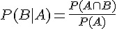
範例 1：
舉例而言，假如我們已知某投擲骰子的結果為偶數 (事件 A=偶數)，那麼結果為 3 點 (事件 B=3點) 的機率為多少？
這個條件機率可以用下列算式表示。
P(B|A) = P(3點|偶數)
範例 2：
當然、B 不一定要是 A 的子集合，舉例而言，假如 B 為「不大於 3 點」的事件，那麼我們就可以將條件機率表示如下：
P(B|A) = P(不大於3點|偶數)
獨立事件
獨立事件的定義 :
事件 A 與 B 彼此獨立，則 A, B 兩事件同時出現的機率為
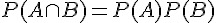
請注意數學中定義的意義，定義代表某種規定，是不需要證明的，只要不符合這種規定的，就不能用此一名詞描述，也就是不符合此定義。
因此、並非所有的事件 A, B 都會是獨立的，但若事件 A, B 符合上述規定的話，我們就稱這兩個事件彼此獨立。
舉例而言，假如對於一個公平的骰子而言，請問下列的 A,B 事件之間是否彼此獨立。
範例 1. 兩事件不獨立的情況
問題：請問 「A=偶數, B=3點」這兩個事件是否獨立
解答：
P(A) = 3/6 = 1/2
P(B) = 1/6
P(A ∩ B) = 0
P(A) P(B) = 1/2 * 1/6 =1/12
由於 P(A B) P(A) P(B) ，所以這兩個事件彼此不獨立。
範例 2. 兩事件獨立的情況
問題：請問 「A=偶數, B=不大於 4 點」這兩個事件是否獨立
解答：
P(A) = 3/6 = 1/2
P(B) = 4/6 = 2/3
P(A ∩ B) = P({2點, 4點}) = 2/6 = 1/3
P(A) P(B) = 1/2 * 2/3 = 1/3
由於 P(A ∩ B) = P(A) P(B) ，所以這兩個事件彼此獨立。
習題：請證明以下定理：
定理 1. 若 A , B 彼此獨立，則 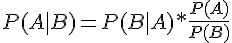
定理 2. 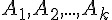 彼此獨立 <=> 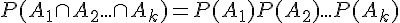
定理 3. 乘法規則： 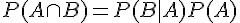
習題 : 請舉出一組獨立事件的範例
貝氏定理
貝氏定理： 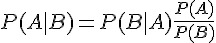
證明：
由條件機率的定義可得
，也可以得到 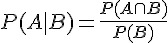
所以 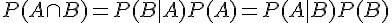
於是得到
習題：
習題 1. 請驗證 「A=偶數, B=3點」這兩個事件是否符合貝氏定理
習題 2. 請驗證 「A=偶數, B=不大於 4 點」這兩個事件是否符合貝氏定理
條件獨立
條件獨立的定義：
假如 A 與 B 在給定 C 的情況下條件獨立，那麼以下算式成立：
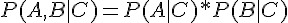 ;
習題：請證明以下定理：
定理： 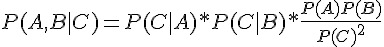
習題：牙疼的診斷問題
本問題來自人工智慧的經典教科書 「Artificial Intelligence: A Modern Approach」第三版，475 頁。
問題描述：當病人來看牙醫時，該病人可能有蛀牙或沒蛀牙，也可能有牙痛或沒有牙痛，而牙醫可能會找到牙痛的原因或找不到。
因此有下列三個隨機變數
X:(蛀) 蛀牙與否 (Cavity) Y:(痛) 牙痛與否 (Toothache) Z:(找) 是否找到痛的牙 (Catch)
假如這個問題個統計機率都已經知道了，如下表所示。
| 牙痛 (Y=1) | 不牙痛 (Y=0) | |||
|---|---|---|---|---|
| 找到 (Z=1) | 找不到 (Z=0) | 找到 (Z=1) | 找不到 (Z=0) | |
| 蛀牙(X=1) | 0.108 | 0.012 | 0.072 | 0.008 |
| 沒蛀牙 (X=0) | 0.016 | 0.064 | 0.144 | 0.576 |
請回答下列問題
- 問題 1：請計算 P(沒痛) = ?
- 問題 2：請計算 P(找到 | 牙痛) = ?
- 問題 3：請問這是一個合理的機率分布嗎？
- 問題 4：請計算 P(找到 | 蛀牙) = ?
- 問題 5：請計算 P(找到, 牙痛) = ?
- 問題 6：請計算 P(蛀 | 找到), P(蛀), P(找到), P(找到 | 蛀) ，然後驗證下列貝氏定理是否成立。
- P(找到|蛀) = P(蛀|找到) P(找到)/P(蛀)
解答
R 的 陣列是用以行為主的順序 (Column Major Order)，請看下列檔案中的說明：
2.2.2 The dim attribute is used to implement arrays. The content of the array is stored in a vector in column-major order and the dim attribute is a vector of integers specifying the respective extents of the array. R ensures that the length of the vector is the product of the lengths of the dimensions. The length of one or more dimensions may be zero.
所以我們必須用以行為主的順序 (Column Major Order) 將機率列舉出來，如下表所示：
| 蛀 X | 痛 Y | 找 Z | P(X,Y,Z) |
|---|---|---|---|
| 0 | 0 | 0 | 0.576 |
| 1 | 0 | 0 | 0.008 |
| 0 | 1 | 0 | 0.064 |
| 1 | 1 | 0 | 0.012 |
| 0 | 0 | 1 | 0.144 |
| 1 | 0 | 1 | 0.072 |
| 0 | 1 | 1 | 0.016 |
| 1 | 1 | 1 | 0.108 |
而且 R 的陣列是從 1 開始算的，不像 C 語言是從 0 開始算的，因此還必須將上表修改如下：
| 蛀 X | 痛 Y | 找 Z | P(X,Y,Z) |
|---|---|---|---|
| 1 | 1 | 1 | 0.576 |
| 2 | 1 | 1 | 0.008 |
| 1 | 2 | 1 | 0.064 |
| 2 | 2 | 1 | 0.012 |
| 1 | 1 | 2 | 0.144 |
| 2 | 1 | 2 | 0.072 |
| 1 | 2 | 2 | 0.016 |
| 2 | 2 | 2 | 0.108 |
> p <- array(c(0.576, 0.008, 0.064, 0.012, 0.144, 0.072, 0.016, 0.108),c(2,2,2))
> p
, , 1
[,1] [,2]
[1,] 0.576 0.064
[2,] 0.008 0.012
, , 2
[,1] [,2]
[1,] 0.144 0.016
[2,] 0.072 0.108
> p[1,1,1]
[1] 0.576
> p[2,1,1]
[1] 0.008
> p[1,2,1]
[1] 0.064
> p[2,2,1]
[1] 0.012
> p[1,1,2]
[1] 0.144
> p[2,1,2]
[1] 0.072
> p[1,2,2]
[1] 0.016
> p[2,2,2]
[1] 0.108
> dimnames(p)[[1]] = c("沒蛀", "蛀")
> dimnames(p)[[2]] = c("沒痛", "痛")
> dimnames(p)[[3]] = c("沒找", "找")
> p
, , 沒找
沒痛 痛
沒蛀 0.576 0.064
蛀 0.008 0.012
, , 找
沒痛 痛
沒蛀 0.144 0.016
蛀 0.072 0.108解答1：P(沒痛) = 0.8 計算過程：
> p[,"沒痛",]
沒找 找
沒蛀 0.576 0.144
蛀 0.008 0.072
> sum(p[,"沒痛",])
[1] 0.8解答2：P(找到 | 牙痛) = 0.62
> p[,,"找"]
沒痛 痛
沒蛀 0.144 0.016
蛀 0.072 0.108
> sum(p[,,"找"])
[1] 0.34
> sum(p[,"痛","找"])
[1] 0.124
> sum(p[,"痛","找"])/sum(sum(p[,"痛",]))
[1] 0.62解答3：請問這是一個合理的機率分布嗎？ (是的，因為總和為 1，而且每個機率直都介於 0 到1之間)
> sum(p)
[1] 1
> 0<=p & p <=1
, , 沒找
沒痛 痛
沒蛀 TRUE TRUE
蛀 TRUE TRUE
, , 找
沒痛 痛
沒蛀 TRUE TRUE
蛀 TRUE TRUE問題 4：請計算 P(找到 | 蛀牙) = ?
> sum(p["蛀",,"找"])/sum(p["蛀",,])
[1] 0.9問題 5：請計算 P(找到, 牙痛) = ?
> sum(p[,"痛","找"])
[1] 0.124解答6：請計算 P(蛀 | 找到), P(蛀), P(找到), P(找到 | 蛀) ，然後驗證下列貝氏定理是否成立。
P(蛀 | 找到) = p(找到|蛀) * p(蛀)/p(找到)
說明：
P(蛀 | 找到) = 0.5294118, P(蛀)=0.2, P(找到)=0.34, P(找到 | 蛀)=0.9
P(蛀 | 找到) = 0.5294118 = 0.9 * 0.2/0.34 = = p(找到|蛀) * p(蛀)/p(找到)
> pab = sum(p["蛀",,"找"])/sum(p[,,"找"]) # pab = P(蛀 | 找到)
> pba = sum(p["蛀",,"找"])/sum(p["蛀",,]) # pba = P(找到 | 蛀)
> pa = sum(p["蛀",,]) # pa = P(蛀)
> pb = sum(p[,,"找"]) # pb = P(找到)
> pab
[1] 0.5294118
> pba
[1] 0.9
> pa
[1] 0.2
> pb
[1] 0.34
> pba*pa/pb
[1] 0.5294118
> pab-pba*pa/pb
[1] 0所以
p(蛀|找)
= sum(p["蛀",,"找"])/sum(p[,,"找"])
= pab
= pba * pa / pb
= p(找|蛀) * p(蛀)/p(找)
= sum(p["蛀",,"找"])/sum(p[,,"蛀"])* sum(p[,,"蛀"])/ sum(p["找",,])完整的操作過程
> p <- array(c(0.576, 0.008, 0.064, 0.012, 0.144, 0.072, 0.016, 0.108),c(2,2,2))
> p
, , 1
[,1] [,2]
[1,] 0.576 0.064
[2,] 0.008 0.012
, , 2
[,1] [,2]
[1,] 0.144 0.016
[2,] 0.072 0.108
> p[1,1,1]
[1] 0.576
> p[2,1,1]
[1] 0.008
> p[1,2,1]
[1] 0.064
> p[2,2,1]
[1] 0.012
> p[1,1,2]
[1] 0.144
> p[2,1,2]
[1] 0.072
> p[1,2,2]
[1] 0.016
> p[2,2,2]
[1] 0.108
> dimnames(p)[[1]] = c("沒蛀", "蛀")
> dimnames(p)[[2]] = c("沒痛", "痛")
> dimnames(p)[[3]] = c("沒找", "找")
> p
, , 沒找
沒痛 痛
沒蛀 0.576 0.064
蛀 0.008 0.012
, , 找
沒痛 痛
沒蛀 0.144 0.016
蛀 0.072 0.108
> p[,"沒痛",]
沒找 找
沒蛀 0.576 0.144
蛀 0.008 0.072
> p[,,"找"]
沒痛 痛
沒蛀 0.144 0.016
蛀 0.072 0.108
> sum(p[,,"找"])
[1] 0.34
> sum(p[,"痛","找"])
[1] 0.124
> sum(p[,"痛","找"])/sum(sum(p[,"痛",]))
[1] 0.62
> sum(p)
[1] 1
> 0<=p & p <=1
, , 沒找
沒痛 痛
沒蛀 TRUE TRUE
蛀 TRUE TRUE
, , 找
沒痛 痛
沒蛀 TRUE TRUE
蛀 TRUE TRUE
> sum(p["蛀",,"找"])/sum(p["蛀",,])
[1] 0.9
> sum(p["蛀",,"找"])/sum(p["蛀",,])
[1] 0.9
> sum(p[,"痛","找"])/sum(p[,"痛",])
[1] 0.62
> sum(p[,"痛","找"])
[1] 0.124
> pab = sum(p["蛀",,"找"])/sum(p[,,"找"]) # pab = P(蛀 | 找到)
> pba = sum(p["蛀",,"找"])/sum(p["蛀",,]) # pba = P(找到 | 蛀)
> pa = sum(p["蛀",,]) # pa = P(蛀)
> pb = sum(p[,,"找"]) # pb = P(找到)
> pab
[1] 0.5294118
> pba
[1] 0.9
> pa
[1] 0.2
> pb
[1] 0.34
> pba*pa/pb
[1] 0.5294118
> pab-pba*pa/pb
[1] 0
> 隨機變數
隨機變數簡介
如果 X 指定給機率空間 S 中每一個事件 e 一個實數 X(e)，同時針對每一個實數 r 都有一個事件集合 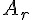 與其相對應，其中 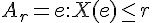 ，那麼 X 被稱作隨機變數。
隨機變數是機率理論當中非常重要的一個概念，但是卻也非常容易被誤解，因為隨機變數其實是一種函數，而非只是簡單的變數，以下是機變數的定義。
隨機變數 (Random Variable)
定義：隨機變數是以樣本空間 S 為定義域的實數值函數，可以寫為 X(s)，其中 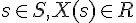
換言之，隨機變數 X 是一個機率空間 (probability space) 中的函數， 可以寫為
，該函數將 S 的某一子集合映射到實數領域 R。

圖、實數坐標軸上的隨機變數示意圖
舉例而言，投擲一個銅板時，可能出現正面或反面，此時的樣本空間 S = {正面、反面}。
假如這是一個公平的銅板，兩面的機率各為 1/2，那麼我們就可以寫為 P(正面) = 1/2， P(反面) = 1/2。
但是在這樣的描述當中，並沒有函數的慨念，因此不符合隨機變數的定義。
如果我們用一個函數 X，代表銅板正面出現的次數，那麼 X 會將 {正面、反面} 映設到 {1,0} ，這樣的函數才符合隨機變數的定義。我們可以寫為 ，其中的樣本空間 S={正面、反面}，且 X(正面)=1，X(反面) = 0。
為何要這麼麻煩呢？為何我們不直接指定樣本空間中每一元素的機率就好了呢？
原因之一是，採用隨機變數概念的描述，才能將函數引入到機率模型中，這樣也才能更方便的描述一系列的隨機試驗。
舉例而言，假如我們投擲兩個銅版，出現正面的個數為一個隨機變數，假如這個隨機變數稱為 X2，那麼 X2 的定義域 (樣本空間) 就是 S2={正正、正反、反正、反反}，那麼隨機變數 X2 就會將 S2 空間中的元素映射到 {2, 1, 0} 這些實數值上，如下所示：
X2(正正) = 2
X2(正反) = 1
X2(反正) = 1
X2(反反) = 0這樣我們就可以用「機率密度函數」來描述各個事件出現的機率，例如用 P[X2=2] 代表出現兩次正面的機率，P[X2=1] 代表出現一次正面的機率，而P[X2=0] 代表沒有出現正面的機率。
範例：
隨機擲兩個骰子，整個事件空間可以由 36 個元素組成：
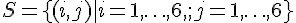這裡可以構成多個隨機變數，比如隨機變數 X ( 獲得的兩個骰子的點數和 ) 或者隨機變數 Y ( 獲得的兩個骰子的點數差)，隨機變數 X 可以有 11 個整數值，而隨機變數 Y 只有 6 個。
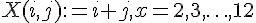 ;
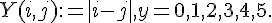 ;
在此，我們引入了一個新的概念，稱為「機率密度函數」，讓我們更仔細的看看這個概念的意義。
習題 1：
問題： 請定義擲茭(博杯)的隨機變數
說明：
有杯映射到 1，沒杯映射到 0
樣本空間為 {正正、正反、反正、反反}
{ 正反、反正} 稱為有杯
解答：
X({正正}) = 0
X({正反}) = 1
X({反正}) = 1
X({反反}) = 0
補充：假如博杯正面積率為 0.6，反面機率為 0.4，而且兩個杯之間互相獨立，那麼假如根據機率公理第三條，可以算出：
P({正正}) = P(正) * P(正) = 0.6*0.6 = 0.36
P({正反}) = P(正) * P(反) = 0.6*0.4 = 0.24
P({反正}) = P(反) * P(正) = 0.4*0.6 = 0.24
P({反反}) = P(反) * P(反) = 0.4*0.4 = 0.16
所以
P(X=1) = P({正反, 反正}) = P({正反}) + P({反正}) = 0.24 + 0.24 = 0.48
P(X=0) = P({正正, 反反}) = P({正正}) + P({反反}) = 0.36 + 0.16 = 0.52
習題 2：
問題： 假如現在從你身上抽一滴血，請回答下列兩個問題。
- 請定義一個隨機變數 X 代表那滴血中的白血球數量。
提示： 樣本空間 S = 此時此刻你身上的所有白血球 = {w1,w2,......,wn}
- 請算出一滴血液中有三顆白血球的機率，假設該滴血液占你總血量的 1/1000。
解答 1：
X(A) = |A|
說明：
A 是一個事件，也就是白血球的樣本空間 S 的子集合，例如： A = {w1, w5, w9}
|A| 代表 A 集合的大小，也就是元素個數，舉例而言：
如果 A = {w1, w5, w9} ，那麼 |A| = 3
如果 B = {w2, w8}，那麼 |B| = 2
如果 C = {}，那麼 |C| = 0
如果 D = S，那麼 |D| = n
解答 2：
P(X=3) = P({A | X(A) = 3}) = P({{w1, w2, w3}) + P({w1, w2, w4}) + ......
假如任一顆白血球被抽到的機率等於該滴血液佔全身血液的比率，由於該滴血液佔總血量的 1/1000，所以給顆白血球被抽到的機率為 1/1000。
而且假設這些白血球沒有智慧，也不會聚合在一起，因此相互之間獨立，那麼由於每顆白血球被抽到的機率為 1/1000，因此 P(w1) = P(w2) = .... P(wn) = 1/1000。
那麼初步想法是 P(w1w3) = P(w1) * P(w3) = 1/1000 * 1/1000 。
但是上述的想法有個小問題，那就是該情況代表其它白血球都沒被抽到，因此所謂的 P(w1w3) 真正的意思應該是

所以 P(X=3) 應該算法如下：

推而廣之，P(X=k) 的機率之算法如下：

事實上，這個題目的機率分布就是下一章的二項分布，如下所示：

而且、當 n 趨近於無限大時，這個分布將會趨近於布瓦松分布，如下所示：

其中的 λ 之意義為，在單位時間 (或單位面積、體積) 內，事件的出現次數平均為 λ 次。
離散與連續
如果隨機變數 X 的取值是有限的或者是可數無窮盡的值，則稱 X 為離散隨機變數，如下所示：
如果 X 由全部實數或者由一部分區間組成，則稱 X 為連續隨機變數，連續隨機變數的值是不可數及無窮盡的。
例如：擲骰子和丟銅版，都是離散型的隨機變數。而常態分布或均等分布，則是連續型的隨機變數之分布。
機率密度函數 (Probabilistic Density Function)
機率密度函數 (Probabilistic Density Function, PDF)
定義：機率密度函數則是一個符合機率公理的的函數 P，當我們寫 P[X=x] 時，意味著 x 是一個特定實數，其機率定義如下：
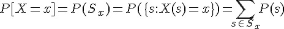其中的 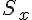 乃是一個 S 的子集合，定義為 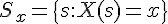 。
舉例而言，P[X=2] 代表 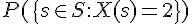 的機率。
讓我們來看看更多的機率密度函數的範例。
範例 1：
在投擲銅板的機率過程中，其樣本空間 S={正, 反} ，
而其中一個常見的隨機變數 X ，是用來計算銅板的正面數量，
也就是 X(正) =1, X(反) = 0。
此時，P[X=1] = P({正}) = 0.5，而 P[X=0] = P({反}) = 0.5
範例 2：
在投擲兩個銅板的機率過程中，其樣本空間 S={正正, 正反, 反正, 反反} ，
而其中一個常見的隨機變數 X ，是用來計算銅板的正面數量，
也就是 X(正正) =2, X(正反) = X(反正) = 1, X(反反) = 0。
P[X=2] = P({正正}) = 0.25 P[X=1] = P({正反,反正}) = 0.5 P[X=0] = P({反反}) = 0.25
範例 3：
在投擲骰子的機率過程中，其樣本空間 S={1點,2點,3點,4點,5點,6點}，
而其中一個常見的隨機變數 X ，是用來計算點數的，
也就是 X(1點) =1, X(2點) = 2, ... X(6點) = 6。
此時，P[X=1] = P[X=2] = ... = P[X=6] = 1/6。
範例 4：
在投擲骰子的機率過程中，其樣本空間 S={1點,2點,3點,4點,5點,6點}，
而其中一個不常見的隨機變數 Y ，是用來辨認偶數點的，
也就是 Y(1點) =0, Y(2點) = 1, Y(3點) = 0, Y(4點) = 1, Y(5點) = 0, Y(6點) = 1。
此時，P[Y=1] = P[Y=0]= 1/2。
累加分配函數 (Cumulative Distribution Function)
有了上述的「隨機變數」與「機率密度函數」之後，我們就可以很容易的定義「累加分配函數」這種在「實數值」上的概念了。
累加分配函數 (Cumulative Distribution Function, CDF)
定義：累加分配函數 F(x) 代表所有小於 x 的機率密度函數之累加值 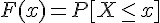
離散情況： 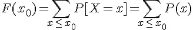
連續情況： 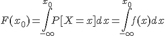
為了方便起見，我們經常會將 P[X=1] 簡寫成 P(1) 或 f(1)，P[X=x] 簡寫成 P(x) 或 f(x)。 所以上面公式中的 P(x) 是離散情況中機率密度函數 P[X=x] 的簡寫，而 f(x) 是連續情況中 P[X=x] 的簡寫。
隨機變數的代數運算
在單一個樣本空間 S 中，可以有很多不同的隨機變數 X, Y, ... ，因為將 S 映射到 R 的函數有很多，例如：
X(s) 其中
Y(s) 其中 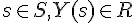
...
在機率統計中，我們經常看到隨機變數可以像數值一樣進行 +, -, * 等運算。舉例而言，假如 X, Y 均為隨機變數，那麼 「X+Y」, 「X-Y」, 「X*Y」 等都是隨機變數。
但是在前文中，我們看到了隨機變數其實被定義為一個「實數值函數」 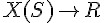 ，那麼這些 +, -, * 等運算就是在函數上所進行的運算，這些運算的函意到底是甚麼呢？
3X 的意義
隨機變數 3X 代表的是一個函數 Z=3X，其中 Z 函數對每一個元素 s 的映射值均為 X 的 3 倍，也就是：
Z(s) = 3 * X(s)
範例：
問題：令 X 為擲骰子點數的隨機變數，也就是 X(k點)=k (k=1..6)，那麼隨機變數 3X 代表的是 Z(k點)=3*X(k點)=3k 這個函數。
根據這樣的表示方法，如果 Z = 3X，那麼請計算下列機率值。
- 請問 P[Z=3] = ?, (答案為1/6)
- 請問 P[Z=1] = ?, (答案為0)
- 請問 P[Z=18] = ?, (答案為1/6)
- 請問 P[Z=5] = ?, (答案為0)
範例：
問題：令 X 為丟銅板所得正面次數的隨機變數，也就是 X(正)=1, X(反)=0，那麼隨機變數 Z=3X 代表的是 Z(正)=3，Z(反)=0 這個函數。
X+Y 的意義
隨機變數 X+Y 代表的是一個函數 Z=X+Y，其中 Z 函數對每一個元素 s 的映射值均為 X + Y 的映射值總和，也就是：Z(s) = X(s)+Y(s)
範例：
令 X, Y 均為為擲骰子點數的隨機變數，也就是 X(k點)=Y(k點)=k (k=1..6)，那麼 X+Y 代表的是隨機變數 Z(k點)=2k 這個隨機變數。
範例：
問題：令 X 為擲骰子點數的隨機變數，Y 為丟銅板所得正面次數的隨機變數，那麼 X+Y 這個隨機變數代表甚麼意義呢？
解答：這兩個隨機變數的定義域不同，因此不能相加，但是若我們將定義域擴展為聯合分布，那麼就可以相加。
在這個範例中，X 與 Y 兩者的定義域 SX, SY 並不相同，因此必須用聯合隨機分布的概念，也就是同時投擲一顆骰子與一個銅板，才能有效說明 X+Y 的意義。
對於定義域不同的兩個隨機變數而言，其樣本空間可用兩者的「笛卡兒」乘積代表，也就是 SX = {1點,...., 6點} , 而 SY = {正, 反}。
此時 X+Y 所在的樣本空間，必須解釋為 {1點,...., 6點} 與 {正, 反} 兩者的笛卡兒乘積，總共有 12 種可能，聯合分布的樣本空間 S 如下所示。
S = = { (1點, 正), (1點,反), (2點, 正), (2點,反), ....(6點, 正), (6點,反)}
因此，Z = X+Y 所代表的隨機變數，其實是一個 Z 函數，該函數將 映射到實數 R 中，其中的 X 作用在 上，而 Y 作用在 上，也就是： Z(s) = Z(x, y) = X(x)+Y(y)
所以，P(Z=2) 也可以寫成 P(X+Y = 2) ，也就是 P({(1點, 正), (2點,反)})，因此 P(Z=2) 的機率為 2/12 = 1/6。
X Y 的意義
隨機變數 X Y 代表的是一個函數 Z=X Y，其中 Z 函數對每一個元素 s 的映射值均為 X Y 的映射值乘積，也就是：
Z(s) = X(s) Y(s)
範例：
問題：令 X 為擲骰子點數的隨機變數，Y 為丟銅板所得正面次數的隨機變數，那麼 X Y 這個隨機變數代表甚麼意義呢？
解答：這兩個隨機變數的定義域不同，因此不能相加，但是若我們將定義域擴展為聯合分布，那麼就可以相加。
同上一個範例，X 與 Y 兩者的定義域 並不相同，樣本空間仍然用其「笛卡兒」乘積代表。
S = = { (1點, 正), (1點,反), (2點, 正), (2點,反), ....(6點, 正), (6點,反)}
因此，Z = X Y 所代表的隨機變數，其實是一個 Z 函數，該函數將 映射到實數 R 中，其中的 X 作用在 上，而 Y 作用在 上。
所以，P(Z=2) 也可以寫成 P(X Y = 2) ，也就是 P({(2點, 正)}) ，因此 P(Z=2) 的機率為 1/12。
X^k 的意義
隨機變數  代表的是一個函數 ，其中 Z 函數對每一個元素 s 的映射值均為 X(s) 的 k 次方，也就是：
代表的是一個函數 ，其中 Z 函數對每一個元素 s 的映射值均為 X(s) 的 k 次方，也就是：
範例：X 為投擲 1 顆骰子點數的隨機變數，且定義 ，請問隨機變數 P(Z=4) 的機率為何？
解答：
所以 P(Z=4) 相當於 P(X=2) = P({2點}) = 1/6
但必須注意的是 Z 的定義域雖仍然為 ({1點,...., 6點})，但是值域卻為 1,4,9,16,25,36。
結語
隨機變數 X, Y, Z, ... 乃是一種作用於樣本空間 S 的實函數，此種函數會將樣本點映射到實數中，例如： 代表函數 X 將樣本空間中的元素 s 映射到某個實數值 x。
利用隨機變數映射完成之後，就可以比較大小，因此可以計算「機率密度函數」與「累加分配函數」，這樣就能利用加總或積分去計算某個區間內的機率，讓機率模型得以進行數學性的運算。
我想這是為甚麼數學家要將隨機變數定義成實函數的原因之一吧！
機率分布
簡介
在程式設計領域，「設計模式」是一些經常被使用到的物件樣式，而在數學領域，也同樣存在著某些「常見模式」，在機率統計領域，這些「常見模式」就是機率分布。
機率分布可以分為「離散型」與「連續型」兩類，離散型的機率分布通常只會有整數型的值，而連續型的機率分布則在整個實數軸上都可能產生樣本。
伯努力試驗 (Bernoulli trial)
所有的離散型機率分布，幾乎都是從「伯努力試驗」這個概念開始的，讓我們先來瞭解一下何謂「伯努力試驗」。
伯努利試驗是一項只有兩種可能結果的隨機試驗，可以用下列機率分布描述：

換句話說、伯努力試驗是一種 YES or NO (1 or 0) 的試驗。舉例而言，像是「丟銅版、生男生女、一地區某天最高溫是否超過 30 度、擲骰子是否超過 2 點」等等，都可以用伯努力實驗描述。
伯努力試驗的概念很簡單，以下是一些範例：
範例 1 :
丟一個公正銅板，用隨機變數 X 將正面映射為 1 ，反面映射為 0，那麼就可以用 P[X=1]=0.5, P[X=0]=0.5 表示這個機率模型。
在 R 軟體中， Sample 函數可以用來模仿柏努力試驗。
舉例而言，以下是範例一的丟銅板試驗，指令 sample(0:1, 10, replace=T, prob=c(0.5,0.5)) 代表連續進行 10 次柏努力試驗，成功失敗機率各為 0.5。
> sample(0:1, 10, replace=TRUE, prob=c(0.5,0.5))
[1] 1 0 1 1 0 1 0 1 0 1
> sample(0:1, 10, replace=T)
[1] 0 1 1 1 0 0 1 1 1 0說明：X(反面)=0, X(正面)=1, 第一個參數 0:1 分別代表 {反面、正面} 的映射結果，而第二個參數代表只投擲一次，第三個參數 replace 代表樣本取後是否放回，這在頭銅板的範例必須用 replace=TRUE, 因為這次投正面之後不代表下次不能再出現正面，而 prob 則是指定的機率分布，如果不指定則代表採用平分的機率分布，以這個例子就是各為 0.5 的方式。
範例 2 :
假如用機率描述生男生女這件事， X({生男})=1, X({生女})=0, 且生男生的機率為 0.53, 生女生的機率為 0.47，那麼就可以用 P[X=1]=0.53, P[X=0]=0.47 表示這個機率模型。
> sample(0:1, 10, replace=T, prob=c(0.47, 0.53))
[1] 0 1 1 0 1 1 0 1 1 0二項分布 (Binomial distribution)
如果我們進行 n 次的伯努力試驗，每一次的實驗都可以用隨機變數描述， P(ti=1) = p, P(ti=0)=1-p ，而且這些試驗 {t1, t2, ...., tn} 之間是獨立的，那麼我們就可以用二項分布來描述 n 次實驗的可能機率分布。
由於這 n 次實驗相互獨立，假如 (t1 t2 ... tn) 代表這個實驗的一個可能出像，因此 P(t1 t2 .... tn) = P(t1) P(t2) .... P(tn)。
令 X 代表一個可以將 (t1 t2 ... tn) 映射到伯努力試驗成功 (Yes) 次數的函數，那麼、n 次實驗中出現 k 次 1 的機會，可以用以下算式表示。

舉例而言，投擲公正銅板 5 次，得到 3 次正面的機率為  ，其中 p=0.5。
，其中 p=0.5。
範例：
假如生男生的機率為 0.53, 生女生的機率為 0.47，而且每位母親生男生女的事件之間都是獨立的。
某母親 A 想要生 3 個小孩，請問至少有一個男生的機會為多少。
用機率描述生男生女這件事， X({生男})=1, X({生女})=0, 那麼可以計算至少生一個男生的機率如下：
，其中 p = 0.53, (1-p) = 0.47。
讓我們用 R 軟體計算一下
> dbinom(1, 3, 0.53)+dbinom(2,3, 0.53)+dbinom(3,3,0.53)
[1] 0.896177
> sum(dbinom(c(1,2,3), 3, 0.53))
[1] 0.896177
> x=c(1,2,3)
> x
[1] 1 2 3
> p=dbinom(x, 3, 0.53)
> p
[1] 0.351231 0.396069 0.148877
> sum(p)
[1] 0.896177二項分布的圖形
> par(mfrow=c(2,2))
> x = 0:5
> b5 = dbinom(x, 5, 0.5)
> plot(x, b5, type="h")
> b3 = dbinom(x, 5, 0.3)
> plot(x, b3, type="h")
> b7 = dbinom(x, 5, 0.7)
> plot(x, b7, type="h")
> b1 = dbinom(x, 5, 0.1)
> plot(x, b1, type="h")
習題
- 請問丟 10 個公平的銅板，有三個正面的機會是多少？
- 請問丟 n 個公平的銅板，正面次數 <= k 的機率是多少？
- 請問丟 10 個公平的銅板，得到正面次數的期望值為何？
幾何分布 (Geometric distribution)
如果我們連續進行一系列的伯努力試驗，直到成功才停止，那麼我們需要進行多少次實驗呢？
關於這種「直到成功才停止」的問題，可以用幾何分布來描述，以下是幾何分布的定義。

舉例而言，假如我們連續投擲公正銅版，直到出現正面才停止，那麼我們需要投擲 k 次才會得到第一個正面的機率，就會是  ，其中的 p=0.5。
，其中的 p=0.5。
範例：
假如生男生的機率為 0.53, 生女生的機率為 0.47，而且每位母親生男生女的事件之間都是獨立的。
某位母親決定要一直生小孩，直到有一個女孩為止，請問她在生小孩個數不大於三個就能完成任務的機率為多少？
用機率描述生男生女這件事， X({生女})=1, X({生男})=0, 那麼就可以累加下列算式以計算結果。

讓我們用 R 軟體計算一下，必須注意的是，R 軟體中的幾何分布 dgeom 的定義為  ，也就是用失敗次數當 x，因此其公式與上面的有所不同，必須修改如下：(其中的 x 代表失敗次數)。
，也就是用失敗次數當 x，因此其公式與上面的有所不同，必須修改如下：(其中的 x 代表失敗次數)。

> dgeom(0, 0.47)
[1] 0.47
> dgeom(1, 0.47)
[1] 0.2491
> sum(dgeom(c(0,1,2), 0.47))
[1] 0.851123習題
請問丟公平的銅板時，得到第 1 次正面時投擲次數 k 的機率分布為何？該分布的期望值為何？
請問丟公正的骰子時，得到第 1 次 6 點時投擲次數 k 的機率分布為何？該分布的期望值為何？
負二項分布
如果我們對「幾何分布」進行擴充，改成「持續進行試驗直到取得 r 次成功為止」，那麼其機率分布又該如何描述呢？
這樣的機率分布就稱為負二項分布，其公式如下：

舉例而言，假如我們連續投擲公正銅版，直到出現三次正面才停止，那麼我們需要投擲 k 次才會得到第一個正面的機率，就會是  ，其中的 p=0.5。
，其中的 p=0.5。
讓我們用 R 軟體計算一下，必須注意的是，R 軟體中的負二項分布 dbinom 的定義為 Γ(x+n)/(Γ(n) x!) p^n (1-p)^x ，也就是用 n=r, x=k-r-1 的代換方式。
其中的 x 同樣代表失敗次數，而 n 代表成功次數，Γ(n) 代表排列數，所以 Γ(x+n)/(Γ(n) x!) 其實也就是 (x+n-1)!/((n-1)! x!) ，也就是  的意思。
的意思。
R 的操作範例
> dnbinom(0, 3, 0.5)
[1] 0.125
> dnbinom(1, 3, 0.5)
[1] 0.1875
> dnbinom(0:10, 3, 0.5)
[1] 0.125000000 0.187500000 0.187500000 0.156250000 0.117187500 0.082031250
[7] 0.054687500 0.035156250 0.021972656 0.013427734 0.008056641
> n=3
> x=1
> p=0.5
> gamma(x+n)/(gamma(n)*prod(1:x)) * p^n * (1-p)^x
[1] 0.1875
> choose(x+n, n) * p^n * (1-p)^x
[1] 0.25
> choose(x+n-1, x) * p^n * (1-p)^x
[1] 0.1875範例：
假如生男生的機率為 0.53, 生女生的機率為 0.47，而且每位母親生男生女的事件之間都是獨立的。
某位母親決定要一直生小孩，直到有三個女孩為止，請問她在生小孩個數不大於 5 個就能完成任務的機率為多少？
用機率描述生男生女這件事， X({生女})=1, X({生男})=0, 那麼就可以累加下列算式以計算結果。
, 其中 p=0.47, r=3。
但是由於 R 是用失敗次數
> dnbinom(3, 3, 0.47)
[1] 0.1545686
> dnbinom(4, 3, 0.47)
[1] 0.122882
> p=dnbinom(c(3,4,5), 3, 0.47)
> p
[1] 0.15456857 0.12288201 0.09117845
> sum(p)
[1] 0.368629負二項分布的圖形
> par(mfrow=c(2,2))
> nb5 = dnbinom(x, 5, 0.5)
> plot(nb5, type="h")
> nb7 = dnbinom(x, 5, 0.7)
> plot(nb7, type="h")
> nb2 = dnbinom(x, 5, 0.2)
> plot(nb2, type="h")
> nb9 = dnbinom(x, 5, 0.9)
> plot(nb9, type="h")
布瓦松分布 (Poisson distribution)
在離散機率分布當中，布瓦松分布算是相當特別的一個，因為「布瓦松分布」是描述「連續區域內出現幾個樣本」的分布。舉例而言，像是舀一瓢水會撈到的草履蟲數量，或者抽一滴血會抽到的白血球數量等等。
布瓦松分布的公式如下所示，其中的  代表每單位區域內會出現的樣本平均數。
代表每單位區域內會出現的樣本平均數。
要瞭解布瓦松分布，得從二項分布的極限開始想起，以下是三種不同 參數的布瓦松分布圖：

事實上、布瓦松分布是二項分布在 n 趨近無限大的極限情況。

圖、布瓦松分布是二項分布 n 趨近無限大的極限情況
來源：http://en.wikipedia.org/wiki/File:Binomial_versus_poisson.svg
為了說明布瓦松分布與二項分布之間的關係，讓我們用以下的白血球範例來看看隱藏在這兩個分布背後的關係：
範例：抽血時白血球數量的問題
問題： 假如現在從你身上抽一滴血，請回答下列兩個問題。
- 請定義一個隨機變數 X 代表那滴血中的白血球數量。
提示： 樣本空間 S = 此時此刻你身上的所有白血球 = {w1,w2,......,wn}
- 請算出一滴血液中有三顆白血球的機率，假設該滴血液占你總血量的 1/1000。
解答 1：
X(A) = |A|
說明：
A 是一個事件，也就是白血球的樣本空間 S 的子集合，例如： A = {w1, w5, w9}
|A| 代表 A 集合的大小，也就是元素個數，舉例而言：
如果 A = {w1, w5, w9} ，那麼 |A| = 3
如果 B = {w2, w8}，那麼 |B| = 2
如果 C = {}，那麼 |C| = 0
如果 D = S，那麼 |D| = n
解答 2：
P(X=3) = P({A | X(A) = 3}) = P({{w1, w2, w3}) + P({w1, w2, w4}) + ......
假如任一顆白血球被抽到的機率等於該滴血液佔全身血液的比率，由於該滴血液佔總血量的 1/1000，所以給顆白血球被抽到的機率為 1/1000。
而且假設這些白血球沒有智慧，也不會聚合在一起，因此相互之間獨立，那麼由於每顆白血球被抽到的機率為 1/1000，因此 P(w1) = P(w2) = .... P(wn) = 1/1000。
那麼初步想法是 P(w1w3) = P(w1) * P(w3) = 1/1000 * 1/1000 。
但是上述的想法有個小問題，那就是該情況代表其它白血球都沒被抽到，因此所謂的 P(w1w3) 真正的意思應該是
所以 P(X=3) 應該算法如下：
推而廣之，P(X=k) 的機率之算法如下：
事實上，這個題目的機率分布就是下一章的二項分布，如下所示：
而且、當 n 趨近於無限大時，這個分布將會趨近於布瓦松分布，如下所示：
其中的 λ 之意義為，在單位時間 (或單位面積、體積) 內，事件的出現次數平均為 λ 次。
習題
習題：假設每 1CC 的血所含的白血球平均為 10 顆，那麼請問你抽 1CC 的血時，抽到 8 顆白血球的機率是多少。
解答：
λ = 10，因此布瓦松分布為
，將 x=8 代入，得到

其數值可以用 R 軟體計算，如下所示：
> ?dpois
> dpois(8, 10)
[1] 0.112599
> 10^8*exp(-10)/prod(1:8)
[1] 0.112599布瓦松分布的圖形
> par(mfrow=c(2,2))
> x = 0:10
> p3 = dpois(x, lambda=3)
> plot(p3, type="h")
> p7 = dpois(x, lambda=7)
> plot(p7, type="h")
> p1 = dpois(x, lambda=1)
> plot(p1, type="h")
> p5 = dpois(x, lambda=5)
> plot(p5, type="h")
均勻分布 (Uniform distribution)
均勻分布的圖形
> dunif(0.5)
[1] 1
> dunif(0.9)
[1] 1
> dunif(2)
[1] 0
> dunif(-1)
[1] 0
> par(mfrow=c(2,2))
> x=0:10
> curve(dunif(x, min=0, max=1), from=-1, to=11)
> curve(dunif(x, min=0, max=10), from=-1, to=11)
> curve(dunif(x, min=3, max=6), from=-1, to=11)
> curve(dunif(x, min=2, max=9), from=-1, to=11)
常態分布 (Normal Distribution)
常態分布的圖形
> dnorm(0)
[1] 0.3989423
> dnorm(0.5)
[1] 0.3520653
> dnorm(2.5)
[1] 0.0175283
> par(mfrow=c(2,2))
> curve(dnorm(x, mean=0, sd=1), from=-10, to=10)
> curve(dnorm(x, mean=0, sd=5), from=-10, to=10)
> curve(dnorm(x, mean=5, sd=1), from=-10, to=10)
> curve(dnorm(x, mean=-3, sd=3), from=-10, to=10)
附件：離散型機率分布表格整理
以下是離散型機率分布的匯總表格，讀者現在還看不懂的話沒有關係，我們在後文中會解說其中較重要的幾個分布。
| 離散機率模型 | 密度函數 | R 函數名稱 | 說明 |
|---|---|---|---|
| 二項分布 |  |
binom(n:size, p:prob) | n:樣本數, p:正面機率, n 次試驗中有 x 個成功的機率 |
| 多項分布 |  |
multinom(n:size, p(1..k):prob) | n:樣本數, p[1..n]:各項的機率 |
| 負二項分布 |  |
nbinom(size, prob) | x:樣本數, , p:正面機率, 要得到第 r 次成功所需要的試驗次數 |
| 幾何分布 |  |
geom(p:prob) | p: 成功機率, 第一次成功所需要的試驗次數 |
| 超幾何分布 |  |
hyper(N:m,n:n,r:k) | m:白球數量, n:黑球數量, k:抽出球數, 同二項分布，但取樣後不放回 |
| 布瓦松分布 |  |
pois(lambda) | k:期望值,  , , 在 s 時間內，事件出現平均 k 次 |
附件：連續型機率分布表格整理
以下是連續型機率分布的匯總表格，讀者現在還看不懂的話沒有關係，我們在後文中會解說其中較重要的幾個分布。
| 連續機率模型 | 密度函數 | R 函數 | 說明 |
|---|---|---|---|
| 均勻分布 (Uniform) |  |
unif(a:min, b:max) | a:範圍下限, b: 上限 出現機會均等 |
| 常態分布(Normal) |  |
norm(mean, sd) | 中央極限定理：x1+x2+...+xk; 當 k 越大就越接近常態分布 |
| 伽瑪分布 (Gamma) |  |
gamma(shape, rate = 1, scale = 1/rate) |  指數分布與卡方分布都是 Gamma 分布的特例 |
| 指數分布 (Exponential) |  |
exp(rate) | 伽瑪分布(  ) ) 布瓦松過程中，第一次事件出現的時間 W |
| 卡方分布 (Chi-Square) |  |
chisq(df, ncp) | 伽瑪分布(  ) ) 利用樣本推斷母體變異數 |
| 柯西分布 (Cauchy) |  |
cauchy(b:location, a:scale) | |
| 威布爾分布 (Weibull) |  |
weibull(a:shape, b:scale) |  可靠度工程：f(x) 失敗時間, R(t) 可靠度,  失敗率 失敗率 |
| T 分布 (T) |  |
t(df, ncp) | 估計變異數時使用的分布 |
| F 分布 (F) |  |
f(df1, df2, ncp) | 等變異數 F 檢定時使用 |
| 貝塔分布 (Beta) | beta(a:shape1, b:shape2, ncp) | ||
| 對數常態分布 (Log Normal) | lnorm(meanlog, sdlog) | ||
| 邏輯分布 | logis(location, scale) | ||
| Signrank | signrank(n) | ||
| 威爾斯 | wilcox(m, n) | a,b 為兩組樣本 |
期望值與動差生成函數
期望值
定義：期望值 E(X) , (通常用符號  代表,
代表,  )
)
離散分布：
; 通常簡寫為
或者直接寫

連續分布：

期望值的相關定理：
;
;
;
證明
定理 1: E[c] = c
; 根據期望值定義
; 根據基本算術
; 因為 P(x) 是機率密度函數
定理 2: E[c X] = c E[X]
; 根據期望值定義
; 根據基本算術
; 根據期望值定義
定理 3 : E[X + Y] = E[X] + E[Y]
假如離散隨機變數 X, Y 的機率密度函數分別用
代表。
; 根據期望值定義
; 根據乘法對加法的分配率
;
以上證明了離散的情況，連續的情況雷同，請比照上述寫法撰寫。
變異數
定義：變異數 Var(X)
離散隨機變數 X 的變異數 Var(X) 定義如下

說明：
- 上式中的 Var(X) 稱為 X 的變異數，而其平方根
稱為 X 的標準差。 (
- 以上算式中
的下標均為
，而非
，也就是 x 是實數值，而非樣本點。
- 這也是為何要將隨機變數定義為實函數的原因，這樣才能對這些「變數」進行 +, -, * > 等代數運算，並且可以進行期望值與變異數的計算。
定理： 
;
;
;
;
.
期望值的函數
有時，我們會想計算某個隨機變數之函數的期望值，像是 E[g(X)]。
某隨機變數 X 之函數 g(X) 的期望值
期望值 E[g(X)]：

舉例而言，  就是一個隨機變數 X 的函數
就是一個隨機變數 X 的函數  的期望值。
的期望值。
而且、由於上述定理 1, 2, 3 的特性，這些期望值的函數還可以拆開來算，舉例如下：
;
.
在以上的範例中，  稱為 X 的 1 級動差，
稱為 X 的 1 級動差，  稱為 X 的 2 級動差，
稱為 X 的 2 級動差，  稱為 X 的 3 級動差 ....
稱為 X 的 3 級動差 ....
k 階動差 (Kth Ordinary Moment)
定義：
稱為隨機變數 X 的 k 階動差 (Kth ordinary moment)
動差的慨念就像是期望值的多項式，我們可以將任何一個多項式的動差寫成 k 個動差的組合，這樣就能將任何的函數的動差給支解。
但是、可惜的是，即使我們將函數分解成動差的組合，其計算上仍然是相當複雜的，但是如果我們只是想變任某個期望值函數對應的原始機率分布為何，那麼可以藉助「動差生成函數」來完成這項任務，以下是動差生成函數的定義。
動差生成函數
定義：隨機變數 X 的動差生成函數 (Moment Generating Function, m.g.f)
為以下函數

動差存在的條件是期望值
在開區間 (-h, h) 內是有限的。
根據以上定義，離散分布與連續分布的動差生成函數分別可以寫成以下算式：
離散分布：
連續分布：


那麼、動差生成函數到底有甚麼用呢？
關於這個問題，可以讓我們回到泰勒展開式這個微積分的概念來看，就能理解「動差生成函數」背後的原理了。
根據泰勒展開式，我們可以將函數  展開如下：
展開如下：

您可以看到在上述展開式當中，不管 k 為何，每一項的 都存在，並不會消失，而且 的係數為  ， 因此、只要在某個夠小的開區間 (-h, h) 內這個動差生成函數是有限的，那麼隨機變數
， 因此、只要在某個夠小的開區間 (-h, h) 內這個動差生成函數是有限的，那麼隨機變數  與函數 之間將會有對映關係，而機率密度函數 P(X) 與動差生成函數
與函數 之間將會有對映關係，而機率密度函數 P(X) 與動差生成函數  也可以被證明有一對一的對映關係。
也可以被證明有一對一的對映關係。
於是、動差生成函數就成了一個機率分布的「指紋」，意思是如果兩個隨機變數 X, Y 的動差生成函數  ，則這兩個機率分布也必然相同。
，則這兩個機率分布也必然相同。
思考 1：
思考：為何動差生成函數可以做為一個機率分布的「指紋」呢？
說明：如果兩個機率分布 P(X) 與 P(Y) 的動差生成函數相同，那麼將意味著
，根據泰勒展開式可得到

因此在每一階的動差上，
相同，因此這兩個分布也就應該是一樣的了。
回顧 1：
f(x) 在 0 點的泰勒展開式 (麥克羅林級數) 可以作為一個函數的指紋，意思是如果兩個函數的泰勒展開式相同，則這兩個函數必然相同 (這點是高等微積分課程的核心)。
回顧 2：
函數 f(x) 的特徵函數 (Characteristic function) 為

結語
為何數學家要將隨機變數定義成一種函數，然後相樣本映射到實數空間上，而不是直接對樣本進行機率運算呢？筆者認為應該是為了期望值而布的局，因為將樣本映射到實數之後，才能用下列算式計算期望值。

而隨機變數之間的代數運算，像是 「3X」 , 「X+Y」 , 「X-2Y」 ,「X*Y」, 「X*X*X*X」等 運算的結果，也仍然是一種作用在樣本空間 S 的實函數，只是當 X, Y 兩者的樣本空間有所不同時，我們必須以兩者樣本空間的迪卡兒乘積  作為樣本空間。
作為樣本空間。
在這種情況下，期望值函數也才能運作在 +, - * 等運算空間中，得到以下的廣義期望值：
「動差生成函數」可以做為機率分布的指紋，因此如果兩個機率分布的「動差生成函數」相同，那麼其機率分布也會相同。
「動差生成函數」的定義如下：
聯合分布
聯合密度函數
定義：離散聯合密度函數
表示符號：
必要條件：
;
;
定義 2：連續聯合密度函數
表示符號： (範圍： )
必要條件：
;
;
;
邊際密度函數
定義：離散邊際密度函數
- 只有 X 的情況：
- 只有 Y 的情況：
定義：連續邊際密度函數
- 只有 X 的情況：
- 只有 Y 的情況：
聯合分配的期望值
定義：聯合分配的期望值 E[H(X,Y)]
離散的情況：
連續的情況：
定義：聯合分配中單一變數的期望值
離散：
離散：
連續：
連續：
共變異數 (Covariance, 協方差)
定義：共變異數 Cov(X,Y)
定理：共變異數與期望值之關係
定理：相互獨立時的期望值
如果 X, Y 相互獨立 ，則 E[X Y] = E[X] E[Y] 。
相關係數 (Correlation)
定義：
相關係數
定理：
定理：
實作：相關係數的R 程式
> x = sample(1:10, 10)
> x
[1] 1 8 10 5 3 7 9 4 2 6
> cor(x, x+1)
[1] 1
> cor(x, -x)
[1] -1
> cor(x, 0.5*x)
[1] 1
> cor(x, 0.5*x+1)
[1] 1
> cor(x, -0.5*x+1)
[1] -1
> y=sample(1:100, 10)
> y
[1] 4 53 20 68 29 74 17 49 78 62
> cor(x,y)
[1] -0.06586336
> 多變數聯合分布的情況
聯合分布與條件機率
定義：如果 X,Y 滿足下列條件，則稱 X, Y 兩者之間獨立：
多個變數的貝氏定理
;
;
;
其他情況可以類推，只要能正確改寫 A , B 為任何隨機變數序列都行。
條件獨立與貝氏定理
假如 A 與 B 在給定 C 的情況下條件獨立，那麼以下算式成立：
結語
兩個位於樣本空間 S 的聯合隨機行為，會導致樣本空間變成其迪卡兒乘積 S×S，其樣本空間大小變成 。
而 k 個位於樣本空間 S 的聯合隨機行為，會導致樣本空間變成其迪卡兒乘積 S×S×...×S ，其樣本空間大小變成 。
如果兩個位於不同樣本空間 的聯合隨機行為，則會導致樣本空間變成 ，其樣本空間大小變為 。
此時 X, Y 的機率密度函數將會採用以下的「邊際機率密度函數」之算法，以便將聯合樣本空間 中的機率與單一樣本空間 或 中的機率關聯起來。
最後我們必須強調的是，樣本空間的選擇並沒有一定的標準，您可以視問題的需要來定義樣本空間，通常我們會盡量利用獨立的特性，讓樣本空間越小越好，否則將會很難計算。
抽樣與敘述統計
隨機抽樣
統計的基礎是抽樣，所謂的抽樣就是從母體 (一大群樣本) 當中抽出一些樣本，而在抽樣的時候，我們通常會盡可能的確保樣本的隨機性，以避免抽到的樣本有所偏差。
簡單來說，抽樣是從一群東西(母體) 當中隨機抽取出 x1, x2, ...., xn 等 n 個觀察值的過程，表示如下：
母體 => (獨立性) X1, X2, .... , Xn 等 n 個隨機變數相互獨立 => 取出 x1, x2, ...., xn 等 n 個觀察值。在電腦上，我們可以很容易的模擬隨機抽樣，以下是一個使用 R 軟體模擬隨機抽樣的範例，其中指令 sample(1:100, 10) 代表從 1 到 100 的整數當中取出 10 個樣本出來。
> x = sample(1:100, 10)
> x
[1] 12 17 50 33 98 77 39 79 7 26sample 函數的原型是 sample(x, size, replace = FALSE, prob = NULL)，如果 replace 設定為 FALSE，代表已經取過就會被去除，不能重複出現；反之則可以重複出現。
在統計學中，有一些常用的機率模型，都有對應的 R 函數，以下是一些最常用的機率模型之整理。
| 機率模型 | 密度函數 | R 函數名稱 | 說明 |
|---|---|---|---|
| 二項分布 | |
binom(n:size, p:prob) | n:樣本數, p:正面機率, n 次試驗中有 x 個成功的機率 |
| 布瓦松分布 | pois(lambda) | 在每單位區域內，事件出現平均 次 |
|
| 均勻分布 (Uniform) | |
unif(a:min, b:max) | a:範圍下限, b: 上限 出現機會均等 |
| 常態分布(Normal) | |
norm(mean, sd) | 中央極限定理：x1+x2+...+xk; 當 k 越大就越接近常態分布 |
| 指數分布 (Exponential) | |
exp(rate) | 伽瑪分布( ) 布瓦松過程中，第一次事件出現的時間 W |
對於每個機率模型，您只要在該函數前若加入 r 這個字，就可以用來產生隨機樣本，以下是一些隨機樣本的產生範例。
> rbinom(20, 5, 0.5)
[1] 4 3 3 4 2 4 3 1 2 3 4 3 2 2 2 4 2 3 1 1
> rpois(20, 3.5)
[1] 2 1 4 2 1 6 3 6 1 3 3 6 6 0 4 2 6 4 6 2
> runif(20, min = 3, max = 8)
[1] 3.933526 3.201883 7.592147 5.207603 4.897806 3.848298 4.521461 4.437873
[9] 3.655640 5.633540 6.557995 5.430671 6.502675 5.637283 7.713699 5.841052
[17] 6.859493 5.987991 3.752924 7.480678
> rnorm(20, mean = 5.0, sd = 2.0)
[1] 6.150209 4.743013 3.328734 5.096294 4.922795 6.272768 4.862825 8.036376
[9] 4.198432 5.467984 2.046450 6.452511 2.088256 5.349187 3.074408 3.628072
[17] 3.421388 7.242598 3.125895 9.865341
> rexp(20, rate=2.0)
[1] 0.17667426 0.49729383 0.12786107 0.13983412 0.44683515 1.30482842
[7] 0.28512544 1.61472266 0.23220649 0.39089780 0.05947224 1.42892610
[13] 0.02555552 0.69409186 0.68228242 0.22542362 0.33590791 0.14684937
[19] 0.34995146 0.80595369為了讓讀者能確認這些指令所產生的圖形確實符合分布，讓我們用這些隨機抽樣函數各產生 100,000 個樣本， 然後用 hist() 這個函數繪製統計圖，就能看出這些抽樣函數的效果了，以下是我們的抽樣指令與結果圖形。
> x = rbinom(100000, 5, 0.5)
> hist(x)
rbinom(100000, 5, 0.5) 的統計圖
> y = rpois(100000, 3.5)
> hist(y)
rpois(100000, 3.5) 的統計圖
> z = runif(100000, min=3, max=8)
> hist(z)
runif(100000, min=3, max=8) 的統計圖
> w = rnorm(100000, mean=5.0, sd=2.0)
> hist(w)
rnorm(100000, mean=5.0, sd=2.0) 的統計圖
> v = rexp(100000, rate=2.0)
> hist(v)
rexp(100000, rate=2.0) 的統計圖
單組樣本的敘述統計
敘述統計乃是隨機抽樣的樣本集合，進行某些計算與繪圖，以便忠實的呈現出樣本的某些特性。這些計算出的數值，以及呈現出來的圖形，可以反映出樣本的某些統計特性，讓統計者能透過數值或圖形，大致了解樣本的統計特徵。
| 中文名稱 | 英文名稱 | 數學公式 / 說明 |
|---|---|---|
| 樣本平均數 | Mean | |
| 樣本中位數 | Median | 樣本排序後最中間位置的數值 |
| 樣本變異數 | Sample Variance |  |
| 樣本標準差 | Sample Standard Deviation | 樣本變異數中的 S 稱為樣本標準差，也就是 |
| 樣本全距 | Range | 樣本中最大的觀察值減去最小的觀察值 |
| 離群值 | Outlier 或 Wild | 離其他樣本很遠，特別大或特別小的樣本值 |
| 樣本四分數間距 | InterQuartile Range, IQR | 第 3 四分位數減掉第 1 四分位數 |
注意：變異數的定義為 ，上述的樣本變異數必須除以 n-1 才是變異數的不偏估計量，而不是除以 n (這是因為我們並不知道母體真正的
範例：請寫出樣本序列 (7 4 6 8 9 4 5 6 2 8) 的以下敘述統計值與其計算過程。
- 樣本平均數 (Mean)
- 樣本變異數 (Sample Variance)
- 樣本標準差 (Sample Standard Deviation)
- 中位數 (Median)
- 全距 (Range)
- 第一四分位數 (q1)
- 第三四分位數 (q3)
- 樣本四分數間距 (iqr)
解答：
- 樣本平均數 (Mean)
mean(x) = (7+4+6+8+9+4+5+6+2+8)/10 = 5.9
- 樣本變異數 (Sample Variance)
- 樣本標準差 (Sample Standard Deviation)
- 中位數 (Median)
M = (2 4 4 5 6 6 7 8 8 9) 最中間的值 = (6+6)/2 = 6
- 全距 (Range)
range(x) = 9-2 = 7
- 第一四分位數 (q1)
順序 0 1 2 3 4 5 6 7 8 9
樣本 2 4 4 5 6 6 7 8 8 9
q1 的位置 0.25 * 9/10 = 0.225
所以 q1 = 4+0.25 * (5-4) = 4.25
- 第三四分位數 (q3)
q3 的位置 0.75 * 9/10 = 0.675
所以 q3 = 7+0.75 * (8-7) = 7.75
- 樣本四分數間距 (iqr)
iqr(x) = q3-q1 = 7.75-4.25 = 3.5
使用 R 軟體進行驗證
> x = sample(1:100, 10)
> x
[1] 12 17 50 33 98 77 39 79 7 26
> mean(x)
[1] 43.8
> median(x)
[1] 36
> var(x)
[1] 984.1778
> sd(x)
[1] 31.37161
> range(x)
[1] 7 98
> max(x)
[1] 98
> min(x)
[1] 7
> max(x)-min(x)
[1] 91
> q1 = quantile(x, 0.25)
> q1
25%
19.25
> q3 = quantile(x, 0.75)
> q3
75%
70.25
> q3-q1
75%
51
> iqr(x)
錯誤: 沒有這個函數 "iqr"
> IQR(x)
[1] 51
> fivenum(x)
[1] 7 17 36 77 98
> summary(x)
Min. 1st Qu. Median Mean 3rd Qu. Max.
7.00 19.25 36.00 43.80 70.25 98.00 習題：請用 R 軟體計算出樣本序列 (8.9 , 4.5 , 3.7 , 10.0 , 11.5 , 8.9 , 5.6 , 15.4 , 16.6 , 1.0) 的以下敘述統計值 (必須寫出指令與結果)。
樣本平均數 (Mean)
樣本變異數 (Sample Variance)
樣本標準差 (Sample Standard Deviation)
中位數 (Median)
全距 (Range)
第一四分位數 (q1)
第三四分位數 (q3)
樣本四分數間距 (iqr)
解答：
[1] 25.37433
> sd(x)
[1] 5.037294
> median(x)
[1] 8.9
> max(x)-min(x)
[1] 15.6
> q1 = quantile(0.25, x)
錯誤在quantile.default(0.25, x) : 'probs' outside [0,1]
> q1 = quantile(x, 0.25)
> q1
25%
4.775
> q3 = quantile(x, 0.75)
> q3
75%
11.125
> q3-q1
75%
6.35
> IQR(x)
[1] 6.35
> 繪製統計圖
| 中文名稱 | 英文名稱 | R 指令 | 說明 |
|---|---|---|---|
| 直方圖 | Histogram | hist(x) | 根據每個區間的樣本出現次數繪製的長條圖。 |
| 莖葉圖 | Stem-and-Leaf Diagram | stem(x) | 用主幹數字與分支數字表示分布情況的圖形。 |
| 盒型圖 | Boxplots | boxplot(x) | 由平均值、內籬笆與外籬笆所形成的盒型圖，可看出中心點與離散程度。 |
| 肩型圖 (累加分配圖) | Relative Cumulative Frequency Ogive | plot(ecdf(x)) | 將累加次數繪製出來的圖形。 |
說明：盒型圖是由四分位數 q1, q3, 以及內籬笆 f1, f3 (inner fences), 連接值 a1, a3 與外籬笆 F1, F3 (outer fances) 所組成的圖形
- 內籬笆：f1 = q1 - 1.5 iqr; f3 = q3 + 1.5 iqr;
- 外籬笆：F1 = q1 - 3.0 iqr; F3 = q3 + 3.0 iqr;
- 連接值：a1 是大於且最接近 f1 的數據點; a3 小於且最接近 f3 的數據點。
盒型圖的畫法請參考下列圖形：

圖、盒型圖的畫法
R 操作範例 : 統計圖
> x = rnorm(100)
> x
[1] 0.389381081 -0.274522826 1.492670583 -1.563228609 0.766405108
[6] 0.736573742 0.297407135 -1.324130406 -1.376598231 1.661727175
[11] -1.356590351 1.309122339 -1.193821085 0.365801091 -0.952034088
[16] -0.277610568 -0.599980091 -0.124105876 -1.107713162 0.560637570
[21] 0.714449138 0.111969057 0.505171739 -2.418297599 0.318797182
[26] 2.716646516 0.345289422 0.019434615 1.087758951 0.033917165
[31] -0.356786424 -1.284809066 1.580411327 0.552931291 -0.615928762
[36] -0.087069820 -0.814632197 -0.570882510 -0.107731447 -1.453838416
[41] -0.257115209 1.166866120 1.072692716 -0.022594852 0.441221144
[46] 1.053900960 -1.025193547 -1.119200587 0.264668203 1.409504515
[51] 0.241644132 -0.955407800 0.446297381 0.231887649 0.769308731
[56] 0.269624579 0.496109294 0.822638573 -0.904380789 -0.429527404
[61] -2.050582772 -0.586973281 -1.192753403 1.158321933 -0.151319360
[66] 0.558858868 -0.656174351 -2.858964403 0.366785049 0.896958092
[71] 0.369315063 -0.953560954 -0.762608370 -1.017449547 -0.127738562
[76] -1.922030980 -0.839897930 1.332972530 -0.001151104 0.104336360
[81] -0.208907813 1.401335798 0.019330593 -0.687559289 0.445371885
[86] 0.504532689 2.168626000 -1.742886230 0.831058071 2.011604088
[91] 1.676059594 1.132849957 -1.047073217 -0.912548540 -2.235854777
[96] -1.194104128 0.121106118 -1.178415224 0.214196778 0.280714044
> stem(x)
The decimal point is at the |
-2 | 9421
-1 | 97654433222211000000
-0 | 998887766664433322111100
0 | 00011122233333344444445556667788889
1 | 11112233445677
2 | 027
> hist(x, main="Frequency Histogram of x")
> hist(x, main="Probability Histogram of x", freq=F)
> Fx = ecdf(x)
> plot(x)
> plot(Fx)
> boxplot(x)
統計圖

盒狀圖
以上都是對於單組樣本的統計數字與圖形，以下將討論兩組樣本的統計數字
共變異數、兩組樣本的相關度統計
兩組樣本的統計數字，最重要的就是共變異數 (covariance) 相關係數 (correlation) 與了。
共變異數是兩組樣本 X, Y 的樣本與期望值之間差的乘積之期望值，而相關係數則共變異數經過 正規化後的結果，用來表示兩組樣本相關程度，其數值介於 -1.0 到 1.0 之間。
| 中文名稱 | 英文名稱 | R 指令 | 數學公式 / 說明 |
|---|---|---|---|
| 共變異數 | covariance | cov(x,y) | |
| 相關係數 | correlation | cor(x,y) |
讓我們看看 R 軟體中的共變異數函數 cov() 與相關係數 cor() 的操作，如下所示：
runif(10, 1, 5)
> x
[1] 1.375135 1.863417 2.403693 2.639902 1.694610 4.419406 4.032262 2.147783
[9] 1.501733 1.497732
> cov(x, x)
[1] 1.144697
> cov(x, x+1)
[1] 1.144697
> cor(x, x)
[1] 1
> cor(x, x+1)
[1] 1
> cov(x, -x)
[1] -1.144697
> cor(x, -x)
[1] -1
> cor(x, 0.5*x)
[1] 1
> y = runif(10, 1, 5)
> y
[1] 1.114662 2.358270 2.089179 4.581484 4.170922 2.630044 1.450336 1.320637
[9] 1.705649 3.506064
> cor(x, y)
[1] -0.04560485
> cor(y, y)
[1] 1
> 中央極限定理
中央極限定理是機率統計上最重要的定理之一，整個統計的估計與檢定幾乎都建立在這個定理之上，因此 對「中央極限定理」有清楚的理解是學好機率統計的一個關鍵。
在本章中，我們將利用 R 軟體實作並驗證「中央極限定理」，讓讀者能透過程式實際體會該定理的重要性與用途。
但是在說明中央極限定理之前，先讓我們來看看一個更簡單的數學定律，那就是大數法則。
大數法則
大數法則又稱大數律，是個數學與統計學的概念，意指數量越多，則其平均就越趨近母體平均數 μ。
用數學的講法來說，也就是如下的公式成立。
; 當
之時。
但是、在上述的趨近定義上，大數法則通常還可以分為強弱兩個版本，如下所示：
弱大數法則 (Weak law) :

弱大數法則的意義是說，當樣本數趨近於無限大時，樣本平均值會趨近於母體平均數 μ。
強大數法則 (Strong law) :

而強大數法則的意義則是說，當樣本數趨近於無限大時，樣本平均值等於母體平均數 的機率為 1。
上述的大數法則只是說出一個傾向而已，而且 這個要求太過強烈，現實上是不可能達到的， 如果能夠找到有限樣本下的平均數之變動範圍限制，那會比這樣的無限大要求更好一些。
柴比雪夫不等式
柴比雪夫不等式給出了樣本分佈情況的一個限制條件，其數學公式如下所示：

柴比雪夫不等式所述說的，是樣本平均數與標準差之間的一個限制關係，這個關係不管在哪一種分佈之下，都一定會成立的。
- 與平均數 相差至少 2 個標準差 (
 ) 的樣本數目不多於 1/4。
) 的樣本數目不多於 1/4。 - 與平均數 相差至少 3 個標準差 (
 ) 的樣本數目不多於 1/9。
) 的樣本數目不多於 1/9。 與平均數
相差至少 4 個標準差 (  ) 的樣本數目不多於 1/16。
) 的樣本數目不多於 1/16。與平均數
相差至少 k 個標準差 (  ) 的樣本數目不多於 1 / k2。
) 的樣本數目不多於 1 / k2。
舉例而言，假如一個 40 人的班上，同學的平均體重為 50 公斤，標準差為 10 公斤，那麼體重小於 30 公斤的人不可能會超過 10 人。
初步看起來，柴比雪夫不等式非常得奇怪，感覺很不合理，舉例而言，對於 n 個柏努力試驗的樣本，由於樣本值不是 0 就是 1，這樣 應該會不符合柴比雪夫不等式才對，但事實上卻會符合。
讓我們舉一個例子，假如 20 個伯努力試驗，共有十次成功，十次失敗，於是其平均值、變異數與標準差可計算如下：
- 平均值：

- 變異數：

- 標準差：

因此，與平均數  相差兩個標準差的情況根本就不存在 (也就是
相差兩個標準差的情況根本就不存在 (也就是  )， 所以柴比雪夫不等式在這樣分為兩個極端的分布上還是會成立的。
)， 所以柴比雪夫不等式在這樣分為兩個極端的分布上還是會成立的。
雖然柴比雪夫不等式給出了平均值的範圍限制，但是卻沒有給出平均值分佈的形狀，還好中央極限定理解決了這個問題。
中央極限定理簡介
以下是中央極限定理的數學式：

如果用白話文陳述，那就是說 n 個樣本的平均數  會趨近於常態分布。
會趨近於常態分布。
更精確一點的說，當您從某個母體 X 取出 n 個樣本，則這 n 個樣本的平均數 會趨近於以平均期望值 為中心， 以母體標準差  除以
除以  的值
的值  為標準差的常態分布。
為標準差的常態分布。
如果採用另一種正規化後的公式寫法，也可以將上述的「中央極限定理」改寫為： 
其中的 Z 是指標準常態分部，也就是  會趨近標準常態分布。
會趨近標準常態分布。
中央極限定理的用途
根據上述的定義，我們知道當樣本數 n 足夠大時 (通常 20 個以上就夠大了)， n 個樣本的平均值 會趨近於常態分布，換句話說也就是 會趨近於標準常態分布。
因此、當我們取得一組樣本之後，我們就可以計算其平均數 $\frac{x_1+x_2+...+x_n}{n}=\bar{x}$，如果有人告訴我們說母體的 平均數 的值是多少，我們就可以看看  與 是否差距很遠，如果差距很遠， 導致 來自平均數 母體的機率很小，那麼很可能是此組樣本是非常罕見的特例，或者該組樣本的抽樣有所偏差，也就是該組樣本很可能並非來自平均數為 的母體。
與 是否差距很遠，如果差距很遠， 導致 來自平均數 母體的機率很小，那麼很可能是此組樣本是非常罕見的特例，或者該組樣本的抽樣有所偏差，也就是該組樣本很可能並非來自平均數為 的母體。
以下是一些標準常態分布的重要數值，


> pnorm(1)-pnorm(-1)
[1] 0.6826895
> pnorm(2)-pnorm(-2)
[1] 0.9544997
> pnorm(3)-pnorm(-3)
[1] 0.9973002
> pnorm(4)-pnorm(-4)
[1] 0.9999367
> pnorm(5)-pnorm(-5)
[1] 0.9999994
> pnorm(6)-pnorm(-6)
[1] 1
> options(digits=10)
> pnorm(6)-pnorm(-6)
[1] 0.999999998從上面的數值您可以看出來，管理學上所謂的六標準差其實是很高的一個要求，也就是良率必須要達到 99.9999998% 以上才行。
如果您今天所取的 n 個樣本，與母體平均數 距離兩個標準差以上，那就很可能有問題了，這種推論稱為檢定，我們可以用 R 軟體中的 t.test 函數來檢驗這件事，我們將在下一期當中說明如何用 R 軟體進行統計檢定的主題，讓我們先將焦點移回到中央極限定理身上，用 R 軟體 來驗證該定理。
R 程式範例：驗證中央極限定理
> u <- matrix ( runif(500000), 50, 10000 )
> y <- apply ( u, 2, mean )
> hist(u[,1])
> hist(y)
> ?apply
> 說明：
- u 乃是將 50 萬個 uniform 樣本分配成 50*10000 的矩陣，
- y 對 u 進行列統計 apply ( u, 2, mean ) 代表對每行取平均值 mean(col of u) 的結果。
- 因此 y 代表從 Uniform Distribution 中每次取出 50 個樣本，然後進行加總平均的結果，也就是
 。
。 - 從下列的 hist(y) 圖形中，我們可以看到中央極限定理的證據：也就是 會趨向常態分布。
![圖、hist(u[,1]) 畫出的圖形](../img/HistU.jpg)
圖、hist(u[,1]) 畫出的圖形

圖、hist(y) 畫出的圖形
CLT = function(x) {
op<-par(mfrow=c(2,2)) # 設為 2*2 的四格繪圖版
hist(x, nclass=50) # 繪製 x 序列的直方圖 (histogram)。
m2 <- matrix(x, nrow=2, ) # 將 x 序列分為 2*k 兩個一組的矩陣 m2。
xbar2 <- apply(m2, 2, mean) # 取每兩個一組的平均值 (x1+x2)/2 放入 xbar2 中。
hist(xbar2, nclass=50) # 繪製 xbar2 序列的直方圖 (histogram)。
m10 <- matrix(x, nrow=10, ) # 將 x 序列分為 10*k 兩個一組的矩陣 m10。
xbar10 <- apply(m10, 2, mean) # 取每10個一組的平均值 (x1+..+x10)/10 放入 xbar10 中。
hist(xbar10, nclass=50) # 繪製 xbar10 序列的直方圖 (histogram)。
m20 <- matrix(x, nrow=20, ) # 將 x 序列分為 25*k 兩個一組的矩陣 m25。
xbar20 <- apply(m20, 2, mean) # 取每20個一組的平均值 (x1+..+x20)/20 放入 xbar20 中。
hist(xbar20, nclass=50) # 繪製 xbar20 序列的直方圖 (histogram)。
}
CLT(rbinom(100000, 20, 0.5)) # 用參數為 n=20, p=0.5 的二項分布驗證中央極限定理。
CLT(runif(100000)) # 用參數為 a=0, b=1 的均等分布驗證中央極限定理。
CLT(rpois(100000, 4)) # 用參數為 lambda=4 的布瓦松分布驗證中央極限定理。
CLT(rgeom(100000, 0.5)) # 用參數為 n=20, m=10, k=5 的超幾何分布驗證中央極限定理。
CLT(rhyper(100000, 20, 10, 5)) # 用參數為 p=0.5 的幾何分布驗證中央極限定理。
CLT(rnorm(100000)) # 用參數為 mean=0, sd=1 的標準常態分布驗證中央極限定理。
CLT(sample(1:6, 100000, replace=T)) # 用擲骰子的分布驗證中央極限定理。
CLT(sample(0:1, 100000, replace=T)) # 用丟銅板的分布驗證中央極限定理。以下是這些指令的執行結果，從這些圖中您可以看到當樣本數到達 20 個的時候，幾乎每種樣本都會趨向常態分布。

圖、指令 CLT(rbinom(100000, 20, 0.5)) 的執行結果

圖、指令 CLT(runif(100000)) 的執行結果

圖、指令 CLT(rpois(100000, 4)) 的執行結果

圖、指令 CLT(rgeom(100000, 0.5)) 的執行結果

圖、指令 CLT(rhyper(100000, 20, 10, 5)) 的執行結果

圖、指令 CLT(rnorm(100000)) 的執行結果

圖、指令 CLT(sample(1:6, 100000, replace=T)) 的執行結果

圖、指令 CLT(sample(0:1, 100000, replace=T)) 的執行結果
結語
在本節當中，我們沒有證明「大數法則、柴比雪夫不等式、中央極限定理」等數學定律，只用了 R 軟體來驗證中央極限定理， 如果對數學比較有興趣的同學，可以參考以下參考文獻中維基百科的證明。
參考文獻
- The Central Limit Theorem (Part 1)
- 洋洋 -- 淺談機率上的幾個極限定理
- Proof of Central Limit Theorem, H. Krieger, Mathematics 157, Harvey Mudd College, Spring, 2005
- Wikipedia:Law of large numbers (有證明柴比雪夫不等式與大數法則)
- Wikipedia:Chebyshev's inequality -- http://en.wikipedia.org/wiki/Chebyshev's_inequality
- Wikipedia:Central limit theorem (有證明中央極限定理)
- 維基百科：大數定律
- 維基百科：切比雪夫不等式 (有證明柴比雪夫不等式)
- 維基百科：中央極限定理
- Two Proofs of the Central Limit Theorem, Yuval Filmus, January/February 2010
平均值的估計與檢定
在上一章當中，我們說明了中央極限定理的意義，也就是對於某母體 (平均數 mean、標準差 sd) 而言，抽出 n 個獨立樣本  ， 其平均數
， 其平均數  會趨近於常態分布 N(mean, sd/n) 。
會趨近於常態分布 N(mean, sd/n) 。
換句話說，也就是  會趨近於標準常態分布
會趨近於標準常態分布  。
。
有了這樣的定理當基礎，我們就可以進行估計了！但在這之前，我們必須先理解一個關念，那就是信賴區間。
信賴區間
對於一個機率分布 X 而言，假如其機率密度函數為 P(x)，那麼該機率分布在 L1 ≤ x ≤ L2 這個區域之間的機率總和，可以寫成如下算式：
| 分布類型 | P(L1 ≤ x ≤ L2) |
|---|---|
| 離散情況 |  |
| 連續情況 |  |
由於是機率分布，所以上述算式的總和必然介於 0 到 1 之間，假如我們稱該總和為  ，那麼該區間就是一個機率值為 的信賴區間。
，那麼該區間就是一個機率值為 的信賴區間。
補充：我們經常將該 寫為  ，然後稱該區間為
，然後稱該區間為  的信賴區間。
的信賴區間。
為了瞭解信賴區間的慨念，先讓我們看看常態分配 (Normal) 與均等分配 (Uniform) 等兩個機率分布的圖形：

標準常態分配的圖形 N(mean=0, sd=1)

標準均等分配圖形 U(min=0, max=1)
接著讓我們先用均等分配為例，說明信賴區間的概念。舉例而言，假如對於一個介於 0 到 10 之間的均等分布而言， 由於每個點的機率密度函數為 1/10，因此介於 (1, 9) 之間的機率將會是 0.8，也就是 80%。 因此 (1, 9) 是該機率母體的 80% 信賴區間，以下是我們用 R 軟體反應這個信賴區間的操作過程。
> L2=punif(9, min=0, max=10)
> L2
[1] 0.9
> L1=punif(1, min=0, max=10)
> L1
[1] 0.1
> L2-L1
[1] 0.8常態分布的信賴區間
根據中央極限定理，在樣本數夠多 (通常 > 20) 的情況之下，平均值  會趨近於常態分布， 因此常態分布的信賴區間對估計 相當重要，所以我們接下來要看看常態分布的信賴區間。
會趨近於常態分布， 因此常態分布的信賴區間對估計 相當重要，所以我們接下來要看看常態分布的信賴區間。
假如您已經知道某母體為常態分布，而且期望值 (平均值) 為 mean ，標準差為 sd ， 那麼當您用該母體來產生樣本，有多少的樣本會落在範圍 (L1, L2) 之外呢？
上述問題感覺數學符號多了一點，讓我們用實際的數字來進一步說明。
假如母體為標準常態分布 Z=N(0, 1) ，那麼請問產生的樣本落在 (-2, 2) 之外的會有多少呢？
這個問題讓我們用 R 軟體來實際操做看看。
> L2=pnorm(2, mean=0, sd=1)
> L1=pnorm(-2, mean=0, sd=1)
> L1
[1] 0.02275013
> L2
[1] 0.9772499
> L2-L1
[1] 0.9544997
> 1.0-(L2-L1)
[1] 0.04550026以上的操作告訴我們，標準常態分布 Z 的樣本落在 (-2, 2) 之內的機率約為 0.9544997，因此落在範圍外的機率為 0.04550026。
那麼，假如不是標準常態分布，那又如何呢？其實只要知道平均值 mean 與標準差為 sd ，就可以輕易的用 R 軟體算出來。 舉例而言，假如某母體為常態分布 N(mean=5, sd=3) ，那麼若我們想知道其樣本落在 (3, 6) 之間的機率有多少，就可以用 下列操作計算出來。
> L2=pnorm(6, mean=5, sd=3)
> L1=pnorm(3, mean=5, sd=3)
> L1
[1] 0.2524925
> L2
[1] 0.6305587
> L2-L1
[1] 0.3780661根據上述操作，我們知道樣本落在 (3, 6) 之間的機率為 0.3780661。
當然、如果我們真的去用 N(mean=5, sd=3) 的隨機函數產生樣本，其統計值並不一定會那麼的準，但是樣本越多的話， 統計值就會越準，請看下列操作。
操作：產生 10 個樣本的情況
> x=rnorm(10, mean=5, sd=3)
> x
[1] 6.387168 7.292018 4.680202 2.225559 11.208245 7.040107 2.739477
[8] 2.316105 4.482658 4.913032
> 3<x
[1] TRUE TRUE TRUE FALSE TRUE TRUE FALSE FALSE TRUE TRUE
> x<6
[1] FALSE FALSE TRUE TRUE FALSE FALSE TRUE TRUE TRUE TRUE
> 3<x & x<6
[1] FALSE FALSE TRUE FALSE FALSE FALSE FALSE FALSE TRUE TRUE
> sum(3<x & x<6)
[1] 3
> sum(3<x & x<6)/10
[1] 0.3操作：產生 100 個樣本的情況
> x=rnorm(100, mean=5, sd=3)
> sum(3<x & x<6)
[1] 34
> sum(3<x & x<6)/100
[1] 0.34操作：產生 100000 個樣本的情況
> x=rnorm(100000, mean=5, sd=3)
> sum(3<x & x<6)
[1] 37865
> sum(3<x & x<6)/100000
[1] 0.37865以上的操作大致反映出了「大數法則」，樣本越多就會越接近母體的分布。
但是，如果我們先給定要求的機率，而不是先給定區間，那麼要如何找出符合該機率的區間呢？
舉例而言，假如我們想知道常態分布 N(mean=5, sd=3) 的 98% 信賴區間，那麼應該怎麼作呢？以下是我們的操作。
> L1=qnorm(0.01, mean=5, sd=3)
> L1
[1] -1.979044
> L2=qnorm(0.99, mean=5, sd=3)
> L2
[1] 11.97904
> P1=pnorm(L1, mean=5, sd=3)
> P1
[1] 0.01
> P2=pnorm(L2, mean=5, sd=3)
> P2
[1] 0.99
> P2在上述操作中，我們先將 (100-98)% = 2% ，平均分配到常態分配的兩端，然後透過 qnorm(0.01, mean=5, sd=3) 找出下界 L1，接著透過 L2=qnorm(0.99, mean=5, sd=3) 找出上界 L2，如此就找出了該常態分布的 98% 信賴區間，為 (L1=-1.979044, L2=11.97904)。
為了驗證這個答案是正確的，我們再度用 P1=pnorm(L1, mean=5, sd=3) 找出 L1 之前的累積機率，發現確實是 0.01 (也就是 1%)， 而 L2 之前的累積機率是 0.99 (99%)，因此該區間的機率就是 P2 - P1 = 0.99-0.01 = 0.98。
接著，我們可以利用該母體產生很多樣本，以驗證看看這些樣本落於信賴區間內的機率是否符合 98% 的條件，以下是對應的 R 軟體操作。
> x = rnorm(100000, mean=5, sd=3)
> p = sum(L1<x & x<L2)/100000
> p
[1] 0.98012在上述操作中，您可以看到當我們產生十萬個樣本時，這些樣本落在信賴區間內的機率為 0.9812，相當接近 0.98 這個預期值，這用實驗 驗證了上述信賴區間的機率應該是對的。
平均值的信賴區間
按照上述的方法，若我們知道母體為何，那麼就很容易找出一個信賴區間符合特定的機率要求，但是在統計的情況之下，我們往往不知道 母體為何？
如果我們知道母體是 N(mean=5, sd=3)，那麼我們根本不需要計算平均數，因為 mean=5 就告訴了你母體的平均數是 5。
但是當我們不知道母體平均數的時候，如何用樣本  去推測 (或說猜測) 母體的平均數 mean 呢？
去推測 (或說猜測) 母體的平均數 mean 呢？
這個情況有點像下述的 R 程式，讓我們看看以下操作：
> x = rnorm(25, mean=mu, sd=2)
> x
[1] 10.829923 7.786320 6.975080 6.980363 8.999509 7.343410 5.928051 9.158911
[9] 10.116548 7.042043 8.434972 10.530158 7.258413 8.990531 8.484475 9.104462
[17] 1.223568 7.011966 6.405762 4.449411 11.465473 7.382751 10.305355 10.201814
[25] 11.802796
> mean(x)
[1] 8.168483
> sd(x)
[1] 2.332146
> 在上述操作中，我們知道標準差 sd=2，但是不知道平均數 mean=mu (由於程式中沒辦法打數學符號， 以下的 mu 其實都代表數學符號 μ) 中的 mu 是多少，不過我們可以觀察到 25 個樣本序列  的值，而且可以計算出這些樣本的平均值 mean(x) = 8.168483 與 樣本變異數 sd(x) = 2.332145。
的值，而且可以計算出這些樣本的平均值 mean(x) = 8.168483 與 樣本變異數 sd(x) = 2.332145。
問題是，母體的平均值 mean (也就是 mu) 到底是多少呢？
這時我們必需要猜測 (或說推測)！
一個最簡單的推測是，我們認為 mean(x) 的值 8.168483 來取代母體的 mean ，也就是直接認為「樣本的平均值 = 母體的平均值」， 這種推測方法雖然很簡單，但是卻通常不錯。
這種以單一數值推測母體參數的方法，稱為「點估計」。
但是「點估計」太過武斷，事實上筆者用來產生上述樣本時，所設定的 mu 值為 8.0，而不是 8.168483 (不過您可以看到其實蠻接近的)。
如果我們將「估計的方法」改變一下，不要硬用一個點套上去，而是改去推測 mu 的可能範圍，那麼這種估計方法就會變化為「區間估計」。
當母體的標準差 為已知的時候，根據中央極限定理，平均值會趨近於常態分布，因此我們可以用常態分布來進行「信賴區間估計」，這就是尚未正規化之前的中央極限定理，如下公式所示：
但是、如果我們將上述的平均值進行正規化，也就是移項並調整之後，改用下式表示：
那麼我們就可以用下列程式來估計這種母體標準差已知情況下的平均值 了。
mean.range = function(x, alpha=0.05, sd) {
n = length(x) # n = 樣本數
mx = mean(x) # mx 即為平均值 mu 的點估計
r1 = qnorm(alpha/2) # 信賴區間，下半截掉 alpha/2
r2 = qnorm(1-alpha/2) # 信賴區間，上半截掉 alpha/2
L1 = mx-r2*sd/sqrt(n) # 信賴區間下限
L2 = mx-r1*sd/sqrt(n) # 信賴區間上限
range = c(L1, mx, L2) # 信賴區間
}於是我們可以用這個程式去進行區間估計，得到下列操作結果。
> mean.range = function(x, alpha=0.05, sd) {
+ n = length(x) # n = 樣本數
+ mx = mean(x) # mx 即為平均值 mu 的點估計
+ r1 = qnorm(alpha/2) # 信賴區間，下半截掉 alpha/2
+ r2 = qnorm(1-alpha/2) # 信賴區間，上半截掉 alpha/2
+ L1 = mx-r2*sd/sqrt(n) # 信賴區間下限
+ L2 = mx-r1*sd/sqrt(n) # 信賴區間上限
+ range = c(L1, mx, L2) # 信賴區間
+ }
> mean.range(x, sd=2)
> R = mean.range(x, sd=2)
> R
[1] 7.384497 8.168483 8.952468上述操作代表根據樣本 x 所推估的 95% 的信賴區間 ( alpha=0.05, 1-alpha=0.95) 為 (7.384497, 8.952468)， 而樣本的平均值 mean(x) 為 8.168483。
現在我們已經學會的信賴區間估計的方法，但是卻還有一個缺憾！
通常我們除了不知道母體的平均值 mu 之外，我們也不會知道母體的標準差 sd ，因此上述的推估程式其實沒有太大的實用價值！
(這也是為何 R 軟體預設的套建沒有納入這類函數的原因之一)。
T 分佈與平均值的檢定
當母體標準差 sd 未知的時候，我們就無法用常態分布來進行推估了，而必需要用一種稱為 T 分配的分布，來推估母體平均值 mean 的範圍。
那麼、T 分布到底是甚麼呢？其實 T 分布只是常態分布考慮「標準差」未知情況下的一種調整後的結果而已。
因為當標準差 未知時，我們只能改用「樣本標準差 S」 來估計「母體標準差 」，因此我們可以列出下列兩個算式。
當上述兩個分佈互相獨立時，我們就可以得到一種經由卡方 ( ) 分布調整過的常態分布，稱為 T ，其定義如下：
讓我們些看看 T 分布到底長得什麼樣？
其實 T 分布與常態分布非常接近，只是考慮到樣本數量 (自由度+1) 的影響力，因此稍微矮了一點點而已，我們可以從以下的操作與圖形 當中看到 T 分布與常態分布之間的差異。
> curve(dnorm, from=-3, to=3, col="black")
> curve(dt(x, df=25), from=-3, to=3, add=T, ylab="T25", col="blue")
> curve(dt(x, df=10), from=-3, to=3, add=T, ylab="T10", col="red")
> curve(dt(x, df=3), from=-3, to=3, add=T, ylab="T3", col="green")
> 
常態分布與 T 分布 (自由度=3, 10, 25，也就是樣本數為 4, 11, 26 的情況)
有了 T 分布，我們就可以用來檢定 sd 未知情況下的平均數了，以下是我們的操作過程。
> t.test(x)
One Sample t-test
data: x
t = 17.5128, df = 24, p-value = 3.562e-15
alternative hypothesis: true mean is not equal to 0
95 percent confidence interval:
7.205820 9.131145
sample estimates:
mean of x
8.168483 上述操作中，我們用 T 分配來推估母體的平均值範圍，程式的輸出顯示其 95% 信賴區間是 (7.205820, 9.131145)。
事實上、t.test 所作的並不只是「估計信賴區間」而已，而是具有「檢定」某個假設可能程度的功能，因此才稱為 test。
在上述檢定中，我們檢定的「對立假設」(alternative hypothesis) 是 mu≠0 (true mean is not equal to 0) ，也就是 「虛無假設」是 mu=0 ，結果顯示虛無假設成立的「顯著性」只有 3.562e-15 ( ) ，可以說是幾乎不可能。
這個結果是合理的，因為我們用來產生樣本的母體其實是 N(mean=8, sd=2) ，距離 0 實在太遠了。
如果我們將 mu 改設為 8 重新進行一次檢定，您將會看到檢定結果如下：
> t.test(x, mu=8)
One Sample t-test
data: x
t = 0.3612, df = 24, p-value = 0.7211
alternative hypothesis: true mean is not equal to 8
95 percent confidence interval:
7.205820 9.131145
sample estimates:
mean of x
8.168483 在採用 mu=8 所進行的檢定當中，我們看到「顯著性」變成了 p-value = 0.7211，這比起 mu=0 的 p-value = 3.562e-15 大太多了， 代表 mu=8 是有可能的，我們無法否決這樣的可能性。
另外、輸出報告中也顯示了自由度 df = 24，T 分布中所謂的自由度其實是樣本數減一 (25-1=24)。
註：那麼、上述 p-value=0.7211 的値是怎麼來的呢？這牽涉到雙尾檢定的問題，因為我們想檢定的對象是 ，這代表我們想要找 到一個 t 分布且自由度 df=24 的値，使其在截掉兩尾端面積的情況下，剩下的機率累計是 0.7211。如下操作所示：
> half = (1-0.7211)/2
> df1 = 24
> from=qt(half, df=df1)
> to=qt(1-half, df=df1)
> pt(to, df=df1)-pt(from, df=df1)
[1] 0.7211檢定的概念
想必讀到這裡，一定有人在想：我搞不清楚你說的「對立假設」、「虛無假設」、「顯著性」是甚麼東西，讓我們補充如下。
根據某些樣本，推論統計可以進行實驗的檢定某個假設 H1 是否可能，其方法是透過否定對立假設 H0，看看 H0 是否不太可能發生。
- H1：稱為研究假設 (research hypothesis) 或對立假設 (alternhative hypothesis)
- H0：稱為虛無假設 (null hypothesis)
透過推論統計，我們可以檢查實驗結果是否具有顯著性 (假設檢定)，也就是實驗的假設 H1 是否要被接受， 由於 H0 是H1 的對立假設 (不是 H0 就是 H1，也就是 H1 = not H0)，因此一旦否決了 H0 就代表接受了 H1。
舉例而言，以上述的 mu = 0 的情況，其虛無假設 H0 與對立假設 H1 分別如下。
- H0: mu=0
- H1: mu≠0
在進行假設檢定的推論時，我們可能推論正確，也可能推論錯誤，以下是四種可能的推論情況。
| 決策 | H0 為真 | H1 為真 |
|---|---|---|
| 拒絕 H0 | 型 I 錯誤 (H0 為真卻拒絕 H0) | 正確決策 |
| 無法拒絕 H0 | 正確決策 | 型 II 錯誤 (H1 為真卻無法拒絕 H0) |
以實例來說，對於 mu 的情況，其推論決策如下表所示。
| 決策 | H0 : mu=0 為真 | H1 : mu ≠ 0 為真 |
|---|---|---|
| 拒絕 mu=0 | 型 I 錯誤 ( mu=0 卻被我們拒絕) | 正確決策 |
| 無法拒絕 mu=0 | 正確決策 | 型 II 錯誤 ( mu ≠ 0 卻無法拒絕 mu=0) |
當然我們會希望正確決策的機會越大越好，而錯誤決策的機會越小越好。假設檢定可以告訴我們各類型正確與錯誤決策的機率， 以便讓我們知道是否要接受 H1 而拒絕 H0。
在檢定的結果中，我們可以用幾個線索決定是否要拒絕虛無假設 H0，改承認對立假設 H1 ，其根據大致上可以從檢定報告的 兩個部分看出來，第一部分是從「信賴區間」中可以看出，第二部分是從顯著性 P 值當中看出。
在上述兩次的檢定當中，由於 mu=8 位於 95% 信賴區間 (7.205820 9.131145) 之內，因此虛無假設 mu=8 無法被拒絕，也就是 mu=8 是有可能且合理的，但是 mu=0 位於 95% 信賴區間 (7.205820 9.131145) 之外，因此是不太可能，而且應該被拒絕的， 也就是 mu ≠ 0 才是比較合理且可能的。
另外，也可以採用顯著性 (P 值, p-value) 的方式判別，所謂的 P 值就是樣本的不合理性，舉例而言，以上述的 mu=0 的情況， P 值就被定義為  的機率值，由於 mu=0 的分布會產生這麼大的一組平均值的情況非常罕見， 機率只有 3.562e-15 ，因此我們可以很有信心的拒絕 H0:mu=0 這個虛無假設，改採 H1:mu ≠ 0 這個對立假設。
的機率值，由於 mu=0 的分布會產生這麼大的一組平均值的情況非常罕見， 機率只有 3.562e-15 ，因此我們可以很有信心的拒絕 H0:mu=0 這個虛無假設，改採 H1:mu ≠ 0 這個對立假設。
因此在上述兩次檢定中，由於 mu=8 的顯著性 (p-value) 為  算蠻大的， 所以無法被拒絕，也就是 mu=8 是有可能且合理的。
算蠻大的， 所以無法被拒絕，也就是 mu=8 是有可能且合理的。
但是在 mu=0 的檢定中，p-value = 3.562e-15，已經小到不可思議的程度，因此該檢定結果強烈拒絕 mu=0 這樣的假設， 改為支持對立假設 mu ≠ 0 。
檢定的圖形
為了讓讀者更清楚的理解檢定的結果，我們找到了 R 軟體的一個套件，稱為 visualizationTools ， 您可以透過 install.packages("visualizationTools") 這個指令安裝該套件，然後用像下列指令 顯示檢定的結果。
plot(t.test(x, mu=5))以下是一個完整的檢定與圖形顯示過程：
> x = rnorm(25, mean=5.5, sd=2)
> t.test(x, mu=5)
One Sample t-test
data: x
t = 0.8254, df = 24, p-value = 0.4173
alternative hypothesis: true mean is not equal to 5
95 percent confidence interval:
4.508086 6.147536
sample estimates:
mean of x
5.327811
> install.packages("visualizationTools")
--- Please select a CRAN mirror for use in this session ---
嘗試 URL 'http://cran.csie.ntu.edu.tw/bin/windows/contrib/3.0/visualizationTools_0.2.05.zip'
Content type 'application/zip' length 102524 bytes (100 Kb)
開啟了 URL
downloaded 100 Kb
package ‘visualizationTools’ successfully unpacked and MD5 sums checked
The downloaded binary packages are in
C:\Users\ccc\AppData\Local\Temp\RtmpyCqQmq\downloaded_packages
> library("visualizationTools")
> plot(t.test(x, mu=5))
> 上述指令所顯示的圖形如下所示：

圖、指令 plot(t.test(x, mu=5)) 的顯示結果
解讀：
在變異數未知情況下，以下的平均值 會服從自由度為 n-1 的 T 分布如下。
如果從 固定的角度來看，則 分布於以 為中心點的 分布， 但若以 固定的角度反觀，則 落在以 為中心的「信賴區間」內，與信賴區間 重疊的機率為  。
。
習題
習題一、以下 x 是某隨機樣本序列，請回答下列問題
x = c(46.26534, 49.30766, 53.79364, 53.18000, 48.97584, 51.92664, 44.58280, 62.26655, 54.52493, 55.08502, 56.78329, 45.00972, 46.99871, 43.88388, 52.63184, 53.15600, 48.39374, 51.07595, 47.36923, 52.09186, 46.54074, 54.46617, 47.87038, 42.94228, 48.69307)- 請問母體平均值 mu 的 95% 信賴區間為何？
- 請問母體平均值 mu 的 98% 信賴區間為何？
- 請用 mu=50 檢定該平均值
- 請問該檢定的虛無假設為何？
- 請問該檢定的對立假設為何？
- 請問顯著性 p-value 是多少？
- 請問您認為 mu=50 這個虛無假設是否應該被否決？為甚麼？
- 請問您認為 mu 不等於 50 這個對立假設是否應該被接受？為甚麼？
習題二、請用下列方式產生樣本 x，然後回答下列問題
mu=runif(1, 0, 10)
sd1 = runif(1, 1,2)
x=rnorm(25, mean=mu, sd=sd1)
x- 請問母體平均值 mu 的 95% 信賴區間為何？
- 請問母體平均值 mu 的 98% 信賴區間為何？
- 請用 mu=5 檢定該平均值
- 請問該檢定的虛無假設為何？
- 請問該檢定的對立假設為何？
- 請問顯著性 p-value 是多少？
- 請問您認為 mu=5 這個虛無假設是否應該被否決？為甚麼？
- 請問您認為 mu ≠ 5 這個對立假設是否應該被接受？為甚麼？
參考文獻
- 免費電子書 -- 機率與統計 (使用 R 軟體) -- http://ccckmit.wikidot.com/st:main
- 工程統計學：原則與應用(修訂版)(Milton 4/e), 作者：Milton, 譯者：吳榮彬, 年份：2008年 4版, ISBN：9789861574080
再論估計與檢定
在上一章當中，我們說明了如何計算單一組樣本「平均值」的「信賴區間」與「檢定」等問題。在這一章當中，我們將進一步探索 如何用 R 軟體進行其他的檢定，像是「變異數」的檢定，兩組樣本的檢定等問題，我們將不會花太多力氣在數學說明上，而是採用 直接操作的範例導向方法，用範例說明這些檢定的實作方法。
檢定的分類
大致上來說，檢定可以分為「單組樣本、兩組樣本或多組樣本」的檢定，在上期當中，我們所檢定的對象是單組樣本的平均值 μ， 當然我們也可以檢定兩組樣本的平均值是否相等，也就是  是否為真。
是否為真。
如果想檢定的關係並非「等號」關係，那麼檢定還可以分為「右尾檢定、左尾檢定、雙尾檢定」等三種，以平均值 的檢定而言， 其檢定假設如下表所示：
| 右尾檢定 | 左尾檢定 | 雙尾檢定 | |
|---|---|---|---|
| H0 | |||
| H1 |
另外、檢定的對象如果不是平均數 ，而是變異數 ，或者某個比例 p，或者是中位數 M ，那就得改用對應的分布進行檢定，讓我們將檢定的種類與方法整理一下，列表如下：
- 單組樣本的檢定
- 平均值的檢定？ ( ) -- 學生 T 檢定
- 變異數的檢定？ ( ) -- 卡方 檢定
- 比例 p 的檢定？ ( ) -- 常態 Z 檢定
- 中位數 M 的檢定？ ( ) -- 無母數方法 Wilcoxon Sign-Rank 檢定
- 兩組樣本的檢定
- 比較兩平均數 的差值 ( ) 的檢定
- 比較兩變異數 的差值 ( ) 的檢定
- 比較兩機率 的差值 ( ) 的檢定
- 比較兩組中位數 M 的差值 ( ) 的檢定 (無母數方法)
右尾檢定、左尾檢定與雙尾檢定
> x = rnorm(25, mean=5, sd=2)
> x
[1] 6.6148290 8.4660415 4.7084610 8.0959357 5.0618158 3.6971976 7.7887572
[8] 5.2229378 4.7763453 4.3595627 4.7674163 2.8655986 4.5051726 1.2974370
[15] 6.9794643 0.4042951 8.0391053 6.7884780 6.5557084 3.7146943 0.3457576
[22] 7.4302876 6.7216046 9.1046976 7.0879767
> sd(x)
[1] 2.430731
> mean(x)
[1] 5.415983
> t.test(x, alternative="greater", mu=4.8)
One Sample t-test
data: x
t = 1.2671, df = 24, p-value = 0.1086
alternative hypothesis: true mean is greater than 4.8
95 percent confidence interval:
4.584244 Inf
sample estimates:
mean of x
5.415983
> t.test(x, alternative="less", mu=4.8)
One Sample t-test
data: x
t = 1.2671, df = 24, p-value = 0.8914
alternative hypothesis: true mean is less than 4.8
95 percent confidence interval:
-Inf 6.247722
sample estimates:
mean of x
5.415983
> t.test(x, alternative="two.sided", mu=4.8)
One Sample t-test
data: x
t = 1.2671, df = 24, p-value = 0.2173
alternative hypothesis: true mean is not equal to 4.8
95 percent confidence interval:
4.412627 6.419339
sample estimates:
mean of x
5.415983 註：以上的 t.test(x, alternative="greater", mu=4.8) 為右尾檢定，其中的 t = 1.2671, df = 24, p-value = 0.1086 這個 輸出中，p-value=0.1086 其實就是截掉左尾 保留右尾 的結果。如下所示：
> 1-pt(1.2671, df=24)
[1] 0.1086388而 t.test(x, alternative="less", mu=4.8) 為左尾檢定，其中的 t = 1.2671, df = 24, p-value = 0.8914 這個 輸出中，p-value=0.8914 反過來就是截掉右尾 保留左尾 的結果。如下所示：
> pt(1.2671, df=24)
[1] 0.8913612而最後的 t.test(x, alternative="two.sided", mu=4.8) 是雙尾檢定，其中的 t = 1.2671, df = 24, p-value = 0.2173 這個輸出中，p-value=0.2173 其實就是截掉兩尾的結果。如下所示：
> 1-(pt(1.2671, df=24)-pt(-1.2671, df=24))
[1] 0.2172776
> 比例 p 的檢定
> prop.test(25, 100, correct=T, p=0.25)
1-sample proportions test without continuity correction
data: 25 out of 100, null probability 0.25
X-squared = 0, df = 1, p-value = 1
alternative hypothesis: true p is not equal to 0.25
95 percent confidence interval:
0.1754521 0.3430446
sample estimates:
p
0.25
> prop.test(25, 100, correct=T, p=0.01)
1-sample proportions test with continuity correction
data: 25 out of 100, null probability 0.01
X-squared = 557.8283, df = 1, p-value < 2.2e-16
alternative hypothesis: true p is not equal to 0.01
95 percent confidence interval:
0.1711755 0.3483841
sample estimates:
p
0.25
Warning message:
In prop.test(25, 100, correct = T, p = 0.01) :
Chi-squared approximation may be incorrect
> prop.test(25, 100, correct=T, p=0.2)
1-sample proportions test with continuity correction
data: 25 out of 100, null probability 0.2
X-squared = 1.2656, df = 1, p-value = 0.2606
alternative hypothesis: true p is not equal to 0.2
95 percent confidence interval:
0.1711755 0.3483841
sample estimates:
p
0.25 中位數 M 的檢定
> wilcox.test(x, mu=4.8)
Wilcoxon signed rank test
data: x
V = 207, p-value = 0.2411
alternative hypothesis: true location is not equal to 4.8 兩組樣本的平均值檢定
(方法一)：合併 T 檢定 (pooled T test) -- 又被稱為：「獨立 T 檢定」或「不相關 T 檢定」
- 前提條件：兩組樣本必須互相獨立才能使用合併 T 檢定，沒有理相信 (常態分布) 兩組樣本的母體變異數不相等的情況之下，想比較
 時，可用「合併 T 檢定」。
時，可用「合併 T 檢定」。
合併 T 檢定的數學原理，式考慮下列兩組分佈公式：
當 與 相互獨立時，會有下列性質：
於是可以得到：
也就是 服從自由度為 的 T 分布。
其中的 S 定義如下：
接著讓我們來看看如何用 R 進行這類的合併 T 檢定。
> x=rnorm(25, mean=3.0, sd=2)
> y=rnorm(25, mean=3.2, sd=2)
> x
[1] 5.12770813 -0.69201841 3.11359532 1.93715093 7.76880172 3.54159714
[7] 1.47159331 4.27555975 3.48421232 2.25191442 3.46742988 7.85327689
[13] 3.52493667 5.41072190 4.39668469 0.29868134 -0.19521005 1.30992501
[19] 2.55471568 3.89214393 6.01076126 -0.02217834 1.03681457 5.68719430
[25] 4.15852190
> y
[1] 4.0565581 3.9617962 6.3513376 4.9998217 4.4419258 6.3198375
[7] -1.0483622 5.1809845 7.5435307 2.6048084 5.6764663 2.6687181
[13] 2.7981462 -0.3564332 0.8637199 4.2032371 4.5879745 3.1428764
[19] -0.3657162 4.0400208 5.9577457 2.3334531 3.2662193 1.6285190
[25] 2.2731483
> t.test(x, y, var.equal=T) ## (方法一)：合併 T 檢定 (pooled T test) -- 又被稱為：「獨立 T 檢定」或「不相關 T 檢定」
## 前提條件：兩組樣本必須互相獨立才能使用合併 T 檢定，沒有理相信 (常態分布) 兩組樣本的母體變異數不相等的情況之下使用
Two Sample t-test
data: x and y
t = -0.3409, df = 48, p-value = 0.7346
alternative hypothesis: true difference in means is not equal to 0
95 percent confidence interval:
-1.508021 1.070757
sample estimates:
mean of x mean of y
3.266581 3.485213
> t.test(x,y, pair=T) ## (方法二)：成對 T 檢定 (Paired T Test)
## 前提條件：(1) 2個或以上的連續變項皆呈常態分配 (normally distributed)
## (2) 變項與觀察值之間互相獨立 (mutually independently)
Paired t-test
data: x and y
t = -0.3438, df = 24, p-value = 0.734
alternative hypothesis: true difference in means is not equal to 0
95 percent confidence interval:
-1.531134 1.093870
sample estimates:
mean of the differences
-0.218632 變異數服從甚麼分布？
兩組樣本的變異數檢定
| 右尾檢定 | 左尾檢定 | 雙尾檢定 | |
|---|---|---|---|
| H0 | |||
| H1 |
那麼、對於變異數而言應該怎麼檢定才好呢？
由於單一樣本群的變異數服從卡方分布，因此在兩組樣本群時，會服從以下的分布：
這種由兩個卡方分布相除的分布稱為 F 分布。
定理：
令 X, Y 分別是來自常態分配 與 的樣本群，SX2 與 為 X , Y 兩群樣本的變異數，若 ，則統計量 服從自由度為 的 F 分布。
在 R 函數中，進行「兩組樣本變異數檢定」的函數是 var.test()，該函數即是採用 F 分布去進行檢定的，以下是一個用 var.test() 進行檢定的範例。
> var.test(x,y)
F test to compare two variances
data: x and y
F = 1.0973, num df = 24, denom df = 24, p-value = 0.8219
alternative hypothesis: true ratio of variances is not equal to 1
95 percent confidence interval:
0.4835609 2.4901548
sample estimates:
ratio of variances
1.097334 兩組樣本的比例檢定
| 右尾檢定 | 左尾檢定 | 雙尾檢定 | |
|---|---|---|---|
| H0 | |||
| H1 |
> x=c(100, 200)
> y=c(300, 400)
> prop.test(x,y)
2-sample test for equality of proportions with continuity
correction
data: x out of y
X-squared = 18.7698, df = 1, p-value = 1.475e-05
alternative hypothesis: two.sided
95 percent confidence interval:
-0.24201562 -0.09131771
sample estimates:
prop 1 prop 2
0.3333333 0.5000000 兩組樣本的中位數檢定
(方法一)：Wilcoxon Rank-Sum 檢定：兩組獨立觀察值 X, Y 適用
- 統計量：
- 其中的：
| 右尾檢定 | 左尾檢定 | 雙尾檢定 | |
|---|---|---|---|
| H0 | |||
| H1 |
> x = rnorm(20, mean=5, sd=2)
> y = rnorm(20, mean=5.5, sd=2)
> x
[1] 3.962665 4.592900 2.708658 4.302144 9.140617 6.579571 4.711547 4.842238
[9] 5.634979 8.826325 7.492737 5.349967 6.028533 5.326150 3.280819 2.589442
[17] 6.391175 3.299716 5.681381 3.188571
> y
[1] 7.537479 5.810962 7.340678 4.048306 6.179672 5.152021 6.780724 3.354434
[9] 6.484613 8.752706 4.116139 4.939286 4.074703 2.954187 4.489012 5.697258
[17] 5.260137 6.299990 8.188696 5.743851
> wilcox.test(x, y, exact=F, correct=F)
Wilcoxon rank sum test
data: x and y
W = 162, p-value = 0.304
alternative hypothesis: true location shift is not equal to 0 (方法二)：Wilcoxon Signed-Rank 檢定：兩組成對觀察值 (X, Y) 適用
- 樣本：兩組成對觀察值
- 方法：將差距絕對值 由小到大排序，並給予 1..n 的名次。
- 檢定統計量：看看 是否夠接近 MY，如果差很多那麼 W 應該會很大。
- 正排名權重：W + = ∑ Ri > 0Ri
- 負排名權重：∣W − ∣ = ∑ Ri < 0∣Ri∣;
- W = min(W_+, |W_-|)
> wilcox.test(x,y, exact=F, correct=F, paired=T)
Wilcoxon signed rank test
data: x and y
V = 83, p-value = 0.4115
alternative hypothesis: true location shift is not equal to 0 結語
在本文中，我們討論了各種「單組樣本」與「兩組樣本」檢定方法，並用 R 軟體進行示範操作，希望透過這樣的方式讓 讀者感受到「檢定」這一個統計工具的用途。
但是、我們還漏掉了一個部分，那就是「三組以上的樣本」之檢定方法，用來檢定這些樣本是否來自同一母體，這種 「多組樣本檢定」的問題，通常必須使用「變異數分析」(ANOVA, Analysis Of Variance) 的方法處理，這將是我們 下一章所要討論的主題！
參考文獻
- 陳鍾誠的網站/免費電子書/R 統計軟體 -- http://ccckmit.wikidot.com/r:main
- 陳鍾誠的網站/免費電子書/機率與統計 (使用 R 軟體) -- http://ccckmit.wikidot.com/st:main
變異數分析 (ANOVA)
簡介
在前兩章當中，我們曾經探討過「兩組樣本的平均值檢定」問題，當兩組樣本互相獨立時， 我們可以透過檢定 的信賴區間，採用 T 分布去檢定  是否為真， 這種方法稱為合併 T 檢定 (pooled T test)。
是否為真， 這種方法稱為合併 T 檢定 (pooled T test)。
在此、先讓我們再次透過 R 軟體，進行一次 T 檢定，以便喚起讀者的記憶。
檢定兩樣本群的平均值是否相同
> x = rnorm(20, 5, 1)
> x
[1] 6.240855 4.229226 5.349843 6.023241 5.613232 5.300235 4.696128 5.452365
[9] 4.567735 5.260747 3.800322 6.168725 6.196059 4.969572 6.251078 3.549983
[17] 6.432844 5.308146 4.978811 4.944134
> y = rnorm(20, 5, 1)
> y
[1] 5.969639 5.400434 4.231995 4.804537 3.098015 5.481365 6.016810 2.769489
[9] 6.687201 4.240217 6.602660 4.777928 4.825274 4.110038 5.651073 5.829578
[17] 4.651262 6.036818 3.459562 5.993473
> t.test(x, y, var.equal=TRUE)
Two Sample t-test
data: x and y
t = 0.7519, df = 38, p-value = 0.4567
alternative hypothesis: true difference in means is not equal to 0
95 percent confidence interval:
-0.3973599 0.8669515
sample estimates:
mean of x mean of y
5.266664 5.031868
> z = rnorm(20, 4, 1)
> t.test(x, z, var.equal=TRUE)
Two Sample t-test
data: x and z
t = 5.9399, df = 38, p-value = 6.883e-07
alternative hypothesis: true difference in means is not equal to 0
95 percent confidence interval:
1.079955 2.196671
sample estimates:
mean of x mean of y
5.266664 3.628351
> 在以上檢定中， x, y 兩者都是由 rnorm(20, 5, 1) 這個指令 (平均值 5，標準差為 1) 產生的樣本，所以檢定的結果 t.test(x, y, var.equal=TRUE) 之 p-value = 0.4567 ，由於該值遠大於 1-95% = 0.05，所以檢定結果無法否認虛無假設  ，而且信賴區間為 (-0.3973599, 0.8669515) 包含
，而且信賴區間為 (-0.3973599, 0.8669515) 包含  ，這兩者都代表我們無法否認 H0。
，這兩者都代表我們無法否認 H0。
但是、在 t.test(x, z, var.equal=TRUE) 這個檢定中，由於 z 是 rnorm(20, 4, 1) 這個指令 (平均值 4，標準差為 1) 產生的樣本，檢定的結果 p-value = 6.883e-07 也遠小於 0.05，因此強力的否決了 的可能性， 這點從信賴區間 (1.079955, 2.196671) 不包含 0 這件事情上，也可以清楚的看到。
變異數分析 (Analysis of Variance, ANOVA)
但是、如果樣本群的數目變多了，不是兩組樣本，而是 k 組樣本的話，事情就會變得比較麻煩！
如果要用上述的合併 T 檢定對  中的每個配對都作檢定，那麼就要對 (1, 2), (1, 3), ... (1, k), (2, 3), (2,4), ... (2, k), .... (k-1, k) 等
中的每個配對都作檢定，那麼就要對 (1, 2), (1, 3), ... (1, k), (2, 3), (2,4), ... (2, k), .... (k-1, k) 等  種配對都進行一次檢定，這樣的方式有點太麻煩了。
種配對都進行一次檢定，這樣的方式有點太麻煩了。
此時、我們可以採用變異數分析 (中國大陸稱為方差分析) 的方法，來檢定假設 H0 是否成立，也就是檢驗是否所有樣本群的平均值都相同。
讓我們暫時不去探討背後的數學，直接用 R 軟體進行一次變異數分析的檢定，看看這種檢定是如何進行的，以下是一個簡單的操作過程。
> X = rnorm(40, 5, 1) # 產生四十個樣本 (平均值 5，標準差 1)
> X
[1] 5.584603 4.052913 4.434469 5.844309 5.286695 5.188169 4.796683 3.913132
[9] 5.467150 5.740397 4.528423 4.395270 4.994147 4.014513 6.259213 6.898331
[17] 3.792135 3.879688 5.334643 5.887895 5.647250 5.603816 5.465186 6.703394
[25] 5.153999 4.855386 2.129850 5.477026 4.785934 4.138114 5.726216 3.581281
[33] 5.255695 4.515353 6.391714 3.726963 5.744328 5.314164 4.647955 4.848313
> A = factor(rep(1:4, each=10)) # 產生標記 1, 2, 3, 4 各 10 份
> A
[1] 1 1 1 1 1 1 1 1 1 1 2 2 2 2 2 2 2 2 2 2 3 3 3 3 3 3 3 3 3 3 4 4 4 4 4 4
[37] 4 4 4 4
> XA = data.frame(X, A) # 建立框架變數 XA，為每個 X 樣本分別標上 1, 2, 3, 4 等標記。
> aov.XA = aov(X~A, data=XA) # 進行「變異數分析」，看看 X 與 A 之間是否有相關。
> summary(aov.XA) # 印出「變異數分析」的結果報表
Df Sum Sq Mean Sq F value Pr(>F)
A 3 5.015 1.6718 2.119 0.115
Residuals 36 28.408 0.7891
> plot(XA$X~XA$A) # 繪出 X~A 的盒狀圖在上述操作中，我們用 X = rnorm(40, 5, 1) 產生四十個樣本，然後用 A = factor(rep(1:4, each=10)) 與 XA = data.frame(X, A) 這個指令將這四十個樣本分為四群，每群 10 個，分別標以 1, 2, 3, 4 的標記，成為 XA 這個框架 (frame) 變數，然後利用 `aov.XA = aov(X~A, data=XA)' 這個指令進行「變異數分析」，並用 summary(aov.XA) 指令印出分析結果。
您可以看到在分析結果中，Pr(>F) = 0.115 ，並沒有低於 (1-95%) 的 0.05 範圍，因此各組的平均值間沒有明顯差異，我們無法否認 H0。
最後我們用 plot(XA$X~XA$A) 這個指令匯出盒狀圖，就可以大致看到四組分佈的情況。

圖、X 與 A 之間關係的盒狀圖
但是、如果我們再用 rnorm(10, 4, 1) 這個指令產生一組樣本群加入上述資料 X 中，並將這組新產生的樣本群標示為編號 5 ，由於 此組新樣本群的母體平均值為 4 (而不是 5)，因此應該會有明顯不同，以下是我們的實驗操作過程。
> Y = c(X, rnorm(10, 4, 1)) # 將 X 補上 10 個均值為 4 的隨機樣本，成為 Y
> Y
[1] 5.584603 4.052913 4.434469 5.844309 5.286695 5.188169 4.796683 3.913132
[9] 5.467150 5.740397 4.528423 4.395270 4.994147 4.014513 6.259213 6.898331
[17] 3.792135 3.879688 5.334643 5.887895 5.647250 5.603816 5.465186 6.703394
[25] 5.153999 4.855386 2.129850 5.477026 4.785934 4.138114 5.726216 3.581281
[33] 5.255695 4.515353 6.391714 3.726963 5.744328 5.314164 4.647955 4.848313
[41] 3.516310 4.174873 2.541251 2.851404 4.862902 2.739729 2.848565 3.169462
[49] 4.245488 3.543660
> B = c(A, rep(5, 10)) # 產生 10 個編號 5 的標號，將 A 擴充為 B，為新的 10 個樣本標號。
> B
[1] 1 1 1 1 1 1 1 1 1 1 2 2 2 2 2 2 2 2 2 2 3 3 3 3 3 3 3 3 3 3 4 4 4 4 4 4
[37] 4 4 4 4 5 5 5 5 5 5 5 5 5 5
> YB = data.frame(Y, B) # 建立框架變數 YB，為 XA 補上 10 個新樣本的結果
> aov.YB = aov(Y~B, data=YB) # 進行「變異數分析」，看看 Y 與 B 之間是否有相關。
> summary(aov.YB) # 印出「變異數分析」的結果報表
Df Sum Sq Mean Sq F value Pr(>F)
B 1 10.15 10.152 9.84 0.00292 **
Residuals 48 49.52 1.032
---
Signif. codes: 0 ‘***’ 0.001 ‘**’ 0.01 ‘*’ 0.05 ‘.’ 0.1 ‘ ’ 1
>
> plot(YB$Y~YB$B) # 繪出 Y~B 的盒狀圖於是當我們用 aov.YB = aov(Y~B, data=YB) 這個指令去進行「變異數分析」時，就會發現 Pr(>F) 為 0.00292，遠低於 0.05，所以我們可以否認假設  ，也就是認為應該至少有一樣本群與其他樣本群的平均值有顯著的不同。
，也就是認為應該至少有一樣本群與其他樣本群的平均值有顯著的不同。
以下是我們用上述 plot() 指令所繪出的結果，您可以發現第五群樣本明顯的偏低。

圖、Y 與 B 之間關係的盒狀圖
這也是為何 aov(Y~B, data=YB) 的結果會認為應該否認虛無假設 H0 的原因。
那麼、以上變異數分析的數學原理是甚麼呢？為何一次的計算就可以檢定這麼多組的樣本的平均值是否相同呢？以下是其數學推論。
假如所有的樣本用 X 表示，則第一組樣本群用  表示，第二組樣本群用
表示，第二組樣本群用  表示，....，第 k 組樣本群用
表示，....，第 k 組樣本群用  表示。
表示。
那麼第一組的第一個樣本可用  表示， ... 弟 i 組的第 j 個樣本可用
表示， ... 弟 i 組的第 j 個樣本可用  表示。
表示。
如果我們用 代表所有 X 中樣本的平均值，μ + αi 代表第 i 組樣本群的平均值，那麼我們可以寫出下列數學模型：
;
; 且各個
相互獨立。
;
其中的  代表第 i 組平均與總平均的差異，而 則是每個樣本與組平均的差異。
代表第 i 組平均與總平均的差異，而 則是每個樣本與組平均的差異。
我們想測試的是 ，也可以改寫成  ， 檢定背後的數學想法是將「方差」(變異數) 分為兩部份如下：
， 檢定背後的數學想法是將「方差」(變異數) 分為兩部份如下：
;
其中
; 描述總差異。
; 描述
; 描述
數學上可以證明，當 H0 成立時，以下算式也會成立：
;
而且 SS_A 與 SS_E 之間有獨立性，於是得到：
;
因此就可以用 F 分布來進行變異數的檢定了，這就是「變異數分析」的數學原理。
兩兩之間的均值比較
雖然在上述分析 Y~B 的過程當中，我們否認了 這個假設，但是從分析結果中卻無法得知到底哪一個樣本群有明顯的不同。
此時我們可以用 pairwise.t.test 這個函數，來比較兩兩間的不同，以下是我們的比較過程：
首先我們對 X~A 兩者之間進行兩兩比較，您可以看到下列結果。
> pairwise.t.test(X, A)
Pairwise comparisons using t tests with pooled SD
data: X and A
1 2 3
2 1 - -
3 1 1 -
4 1 1 1
P value adjustment method: holm 上述結果發現 (1, 2) (1,3), (1,4), (2,3), (2,4), (3,4) 之間是相同的，所以其矩陣內容值都是 1。
但是如果我們用 pairwise.t.test(Y, B) 指令來檢定 Y 與 B 之間的關係，那就會得到如下結果。
> pairwise.t.test(Y, B)
Pairwise comparisons using t tests with pooled SD
data: Y and B
1 2 3 4
2 1.0000 - - -
3 1.0000 1.0000 - -
4 1.0000 1.0000 1.0000 -
5 0.0053 0.0060 0.0060 0.0060
P value adjustment method: holm 從上述的結果中，您可以看到第 5 列的內容為「0.0053 0.0060 0.0060 0.0060」，明顯的較低，這代表第 5 列的平均值有顯著的不同。
不過、您看到的比較結果，是透過 holm 這個調整方法對顯著值 (P) 進行調整過的，如果沒有調整過，則 (X,A) 及 (Y,B) 的兩兩比較結果將會如下所示。
> pairwise.t.test(X, A, p.adjust.method="none")
Pairwise comparisons using t tests with pooled SD
data: X and A
1 2 3
2 0.94 - -
3 0.94 1.00 -
4 0.90 0.96 0.96
P value adjustment method: none
> pairwise.t.test(Y, B, p.adjust.method="none")
Pairwise comparisons using t tests with pooled SD
data: Y and B
1 2 3 4
2 0.93936 - - -
3 0.93482 0.99545 - -
4 0.89612 0.95654 0.96108 -
5 0.00053 0.00067 0.00068 0.00079
P value adjustment method: none 您仍然可以看到第 5 列的內容「0.00053 0.00067 0.00068 0.00079」明顯的較低，而且幾乎都低於 0.05，因此樣本群 5 的平均值明顯與其他四群有所不同。
結語
在以上的實驗中，我們可以透過 R 軟體中的「變異數分析」函數 aov() 進行多組樣本的平均值比較，瞭解這些樣本的母體平均值是否相同。
假如「變異數分析」的結果認為有所不同，那麼我們就可以利用 pairwise.t.test() 函數，去檢驗看看到底哪些群體之間有所不同，以便找出明顯不同的樣本群。
這種方法在很多「自然科學與社會科學」的實驗當中，都會是很有用的，例如我們可以用「變異數分析」來檢驗「幾種銷售方式之間」是否有明顯的差異，「幾種農藥的除草效果」間是否有明顯差異等等，這些分析對我們進行多組樣本的統計實驗可以提供很好的指引效果。
參考文獻
- R语言与统计分析, 作者: 汤银才, ISBN: 9787040250626。
迴歸分析
簡介
在「點估計」與「區間估計」當中，被估計的對象是一個點的座落點或區域。但是、如果我們想要找尋的是， 兩個以上變數之間的「運算式」關係，那麼就不能只用「估計」了，而必須採用「迴歸分析」的方法。
迴歸分析是在尋找這些變數之間的關係，通常是尋找「線性關係」，舉例而言，假如我們認為 y 與 x 之間具有線性關係，也就是 y 是 x 的線性函數，那麼我們可以將兩者之間的關係寫成 y= a + b * x ，其中 a 與 b 都是某個未知的常數。
當我們取得了很多組 (x,y) 的樣本 (x1, y1) (x2, y2) ..... (xk, yk) 時，我們就可以透過迴歸分析來尋找出這些未知的常數， 進而建立變數之間的線性方程關係式。
R 軟體中的 lm() 函數
在 R 軟體當中，用來做迴歸分析的是 lm() 函數，其函數原型如下：
- lm(formula, data, subset, weights, na.action, method = "qr", model = TRUE, x = FALSE, y = FALSE, qr = TRUE, singular.ok = TRUE, contrasts = NULL, offset, ...)
通常，我們只要用到 formula 與 data 兩個參數就可以進行迴歸運算了，舉例而言，假如我們有 25 個樣本 xy = (x1, y1) (x2, y2) .... (x25, y25)，那麼我們就 可以用下列 lm 函數找出 x, y 之間的線性關係式。
- lm(y~x, xy)
當然、如果自變數不只一個，例如我們想尋找的是 y = a + b1 * x1 + b2 * x2 的話，那麼就可以用下列函數去計算出 a, b1, b2 等係數，以建立迴歸模型。
- lm(y~x1+x2, xy)
單一自變數的迴歸分析：完全線性，無誤差值
現在、就讓我們用 R 軟體來示範「迴歸分析」的做法，
> x = sample(1:10, 25, replace=TRUE) # 從 1 到 10 之中可重複的隨機抽出 25 個樣本
> x
[1] 7 1 9 4 1 2 10 6 3 3 10 9 5 9 5 10 2 1 8 4 8 7 4 6
[25] 9
> y = 1+3*x # 用這些 x 樣本透過線性關係式產生 y 樣本，這是完美的線性關係，完全沒有誤差。
> y
[1] 22 4 28 13 4 7 31 19 10 10 31 28 16 28 16 31 7 4 25 13 25 22 13 19
[25] 28
> plot(x,y) # 畫出 (x,y) 的圖形，您會發現所有點都分布在一條斜率為 3 的斜線上
圖、y=1+3*x 的完全線性 plot(x,y) 圖形結果
> xy = data.frame(x, y) # 讓 (x,y) 的配對形成 frame 變數，這樣才能做為 lm(formula, data) 中的 data 參數。
> xy
x y
1 7 22
2 1 4
3 9 28
4 4 13
5 1 4
6 2 7
7 10 31
8 6 19
9 3 10
10 3 10
11 10 31
12 9 28
13 5 16
14 9 28
15 5 16
16 10 31
17 2 7
18 1 4
19 8 25
20 4 13
21 8 25
22 7 22
23 4 13
24 6 19
25 9 28
> model = lm(y~x, data=xy) # 開始作線性迴歸分析
> model
Call:
lm(formula = y ~ x, data = xy)
Coefficients:
(Intercept) x
1 3 上述的線性回歸函數 lm，果真找到的原來的關係式，也就是「截距 =1、x 係數 =3 」的 「y=1+3*x」的算式，完整的還原了 y 與 x 之間的關係。
單一自變數的迴歸分析：有誤差值
上述的範例雖然很完美，但是卻很不真實，因為在機率統計的世界中，通常有很多難以捕捉的「隨機性誤差」，反應在樣本上面。
現在、就讓我們再度進行一次迴歸分析，只不過這次我們將加入一些常態分布的誤差值進去。
> x = sample(1:10, 25, replace=TRUE) # 從 1 到 10 之中可重複的隨機抽出 25 個樣本
> x
[1] 10 1 9 9 4 3 5 6 4 5 9 4 6 8 8 1 8 3 5 4 8 2 5 4
[25] 3
> y = 1 + 3*x + rnorm(25, mean=0, sd=1) # 用這些 x 樣本透過線性關係式產生 y 樣本，其中的誤差是用 rnorm() 產生的。
> y
[1] 32.084945 2.594432 26.981934 29.395315 11.737131 11.347425 14.292503
[8] 18.543848 12.025822 15.848780 27.211809 13.063985 19.708064 24.161863
[15] 25.271777 4.317383 25.694476 9.167196 15.871665 14.244046 24.165393
[22] 5.994046 16.639490 12.682938 10.978489
> plot(x,y)
圖、y = 1 + 3*x + rnorm(25, mean=0, sd=1) 的有誤差 plot(x,y) 圖形結果
> xy = data.frame(x,y) # 讓 (x,y) 的配對形成 frame 變數，這樣才能做為 lm(formula, data) 中的 data 參數。
> xy
x y
1 10 32.084945
2 1 2.594432
3 9 26.981934
4 9 29.395315
5 4 11.737131
6 3 11.347425
7 5 14.292503
8 6 18.543848
9 4 12.025822
10 5 15.848780
11 9 27.211809
12 4 13.063985
13 6 19.708064
14 8 24.161863
15 8 25.271777
16 1 4.317383
17 8 25.694476
18 3 9.167196
19 5 15.871665
20 4 14.244046
21 8 24.165393
22 2 5.994046
23 5 16.639490
24 4 12.682938
25 3 10.978489
> model2 = lm(y~x, xy, x=T) # 開始作線性迴歸分析
> model2 # 顯示分析結果，發現 截距 intercept 為 0.5345, 且 x 的係數為 3.1447，也就是 y=0.5345+3.1447*x，這與原產生式「y = 1 + 3*x + 誤差」有些差異，但還不錯。
Call:
lm(formula = y ~ x, data = xy, x = T)
Coefficients:
(Intercept) x
0.5345 3.1447
> model2$x
(Intercept) x
1 1 5
2 1 7
3 1 8
4 1 4
5 1 3
6 1 2
7 1 3
8 1 4
9 1 5
10 1 4
11 1 7
12 1 7
13 1 2
14 1 4
15 1 2
16 1 10
17 1 7
18 1 3
19 1 3
20 1 2
21 1 7
22 1 5
23 1 10
24 1 7
25 1 10
attr(,"assign")
[1] 0 1
> 數學原理
那麼、這種迴歸分析到底是根據甚麼原理所設計出來的呢？讓我們從數學的角度看一下這個問題。
對於一組 (X,Y) 樣本而言，假如有 n 個樣本，則可以表示為 ， 如果我們想找出一組線性方程式描述 X, Y 之間的關係，那麼可以寫成如下公式：
; 其中 i=1,2,....,n, 且
接著我們就必須從 (X,Y) 這組資料樣本中，進行 的估計，以便讓該線性函數能盡可能的逼近這些樣本。
我們可以採用「最小二乘法」來進行估計，也就是找出讓下方程式得到最小值的 ：
要找上述方程式的最小值，我們可以對 分別進行微分，最小值會出現在導數為零的地方，推論如下：
但必須注意的是，不管對於哪種 (X,Y) 樣本，最小二乘法都會找出迴歸線，但是如果 (X, Y) 兩者之間根本沒有線性關係， 此時找出線性迴歸也就沒有甚麼意義了。
那麼我們怎麼知道兩者之間有沒有線性關係呢？這可以採用下列檢定方法。
- t 檢驗法
- F 檢驗法
- 相關係數檢驗法。
兩組自變數的迴歸分析：完全線性，無誤差值
當然、我們不只可以做單一自變數的迴歸，也可以做多組自變數的迴歸，以下讓我們用 R 軟體來示範 y=a + b1 * x1 + b2 * x2 迴歸式的分析。
> x1 = sample(1:10, 25, replace=TRUE) # 產生第一個自變數的 25 個樣本值
> x2 = sample(1:8, 25, replace=TRUE) # 產生第二個自變數的 25 個樣本值
> y = 5 + 3 * x1 - 2 * x2 # 用這些 (x1, x2) 樣本透過線性關係式產生 y 樣本，這是完美的線性關係，完全沒有誤差。
> x1
[1] 8 8 8 2 6 3 4 1 5 4 2 1 6 4 2 4 1 5 7 2 9 2 10 4
[25] 5
> x2
[1] 7 7 1 8 5 5 5 2 6 8 5 7 4 6 8 5 6 8 2 5 7 2 7 6 5
> y
[1] 15 15 27 -5 13 4 7 4 8 1 1 -6 15 5 -5 7 -4 4 22 1 18 7 21 5
[25] 10
> yx12 = data.frame(y, x1, x2) # 讓 (y, x1, x2) 的配對形成 frame 變數，這樣才能做為 lm(formula, data) 中的 data 參數。
> yx12.model = lm(y~x1+x2, yx12) # 開始作線性迴歸分析
> yx12.model # 顯示分析結果，發現 截距 intercept 為 5, 且 x1 的係數為 3，x2 的係數為 -2 也就是 y=5+3*x1-2*x2，正確找出我們產生資料用的算式。
Call:
lm(formula = y ~ x1 + x2, data = yx12)
Coefficients:
(Intercept) x1 x2
5 3 -2
> 兩組自變數的迴歸分析：有誤差值
同樣的，對於兩組或多組自變數的情況，我們也可以加入「隨機誤差值」，來讓整個資料集更有真實感，以下是我們的「資料產生」與「迴歸分析」的過程。
> x1 = sample(1:10, 25, replace=TRUE) # 產生第一個自變數的 25 個樣本值
> x2 = sample(1:8, 25, replace=TRUE) # 產生第二個自變數的 25 個樣本值
> y2 = 5 + 3*x1-2*x2 + rnorm(25, mean=0, sd=5)
> y2x12 = data.frame(y2, x1, x2) # 讓 (y, x1, x2) 的配對形成 frame 變數，這樣才能做為 lm(formula, data) 中的 data 參數。
> y2x12
y2 x1 x2
1 10.2069412 8 7
2 11.5760467 8 7
3 24.8724883 8 1
4 -3.4406110 2 8
5 9.0650415 6 5
6 8.2621227 3 5
7 18.7755635 4 5
8 -5.1753518 1 2
9 14.1795708 5 6
10 -2.9588236 4 8
11 4.4931402 2 5
12 -9.1706740 1 7
13 15.7826413 6 4
14 11.1684672 4 6
15 -4.2108325 2 8
16 14.0557877 4 5
17 2.9787818 1 6
18 0.2277253 5 8
19 31.3466157 7 2
20 11.2311146 2 5
21 17.9397316 9 7
22 6.1773147 2 2
23 17.5177323 10 7
24 1.1189083 4 6
25 15.5696626 5 5
> y2x12.model = lm(y~ x1+x2, y2x12) # 開始作線性迴歸分析
> y2x12.model # 顯示分析結果，發現 截距 intercept 為 5.315, 且 x1 的係數為 2.886，x2 的係數為 -1.997，也就是 y=5.315+2.886*x1-1.997x2，這與原產生式 「y = 5 + 3*x1-2*x2+誤差」有些差異，但還不錯。
Call:
lm(formula = y ~ x1 + x2, data = y2x12)
Coefficients:
(Intercept) x1 x2
5.315 2.886 -1.997
> 結語
透過上述的實驗，我們可以發現在沒有誤差的情況下，線性迴歸函數 lm() 都可以找出正確的模型，得到正確的「截距」與「係數值」， 而在有隨機誤差的情況下，線性迴歸函數 lm() 雖然沒有辦法完全環原正確的模型，但是也找到還算不錯的結果，這正是「迴歸分析」 這個工具的威力之所在阿！
參考文獻
- R 統計軟體(4) – 平均值的估計與檢定
- R 統計軟體(5) – 再探檢定
- 陳鍾誠的網站/免費電子書/R 統計軟體 -- http://ccckmit.wikidot.com/r:main
- 陳鍾誠的網站/免費電子書/機率與統計 (使用 R 軟體) -- http://ccckmit.wikidot.com/st:main
主成分分析與因子分析
簡介
雖然「主成分分析」(Principle Component Analysis) 通常出現在機率統計的課本當中，但事實上要理解這個技術 的核心數學知識，卻是線性代數。
學過線性代數的朋友們通常會知道一個很重要但卻又難以理解的抽象概念，那就是「特徵值」與「特徵向量」， 其數學算式如下：
符合這種條件的的 就稱為特徵值，而 則稱為特徵向量。
表面上來看，所謂的特徵向量 就是矩陣 [A] 乘法運算上的一個方向不動點，乘完之後只會在該向量上進行常數倍的縮放，但方向不變。
不過、一個 n*n 矩陣的「特徵值」與「特徵向量」不止有一個，最大可以到達 n 個，假如共有 k 個特徵值，那我們可以列出下列運算式。

...
基本上、特徵值  越大的，代表該特徵向量越能用來描述整個矩陣 (或者說越能代表該矩陣)，所以如果我們只用特徵值最大的幾個 代表整個矩陣，將特徵值小的去除，基本上不會對整個矩陣造成太大的失真。
越大的，代表該特徵向量越能用來描述整個矩陣 (或者說越能代表該矩陣)，所以如果我們只用特徵值最大的幾個 代表整個矩陣，將特徵值小的去除，基本上不會對整個矩陣造成太大的失真。
或許這樣講也不太精確，不過如果您還記得線性代數裏的 Rank 這個慨念，假如一個 3*3 矩陣的 rank 只有 2，那麼就代表三行當中，有一行可以用 其他兩行的線性組合取代，也就是 。
在這種情況下，該矩陣只會有兩個不為零的特徵值 (也就是有一個特徵值為 0)，因此我們可以用兩組特徵值與特徵向量，就重建出整個矩陣。
而所謂的主成分，就是那些對重建矩陣有強大影響力，特徵值較大的那些向量。而那些特徵值很小的，基本上就可以被忽略了。
主成分分析範例 1 (Rank=2)
為了展示上述的數學論點，我們用 R 軟體建構出 4 組樣本，每組有 25 個元素，其中第 3, 4 組是第 1, 2 組的線性組合，因此這個 4*25 矩陣的 rank 將只有 2，所以透過主成分分析，我們應該會看到只有兩個主成分。
以下是我們的範例程式。
> x1=rnorm(25, mean=5, sd=1) # x1 是常態分布隨機產生的 25 個樣本
> x2=rnorm(25, mean=5, sd=1) # x2 是常態分布隨機產生的 25 個樣本
> x3=x1+x2 # x3=x1+x2, 是 x1, x2 的線性組合
> x4=x1+2*x3 # x4=x1+2*x3=x1+2*(x1+x2)=3x1+2x2, 因此也是 x1, x2 的線性組合。
> x14 = data.frame(x1, x2, x3, x4) # 用這四組樣本建立一個 frame 變數 x14
> pr = princomp(x14, cor=TRUE) # 開始進行主成分分析
> summary(pr, loading=TRUE) # 顯示主成分分析的結果
Importance of components:
Comp.1 Comp.2 Comp.3 Comp.4
Standard deviation 1.7281767 1.0066803 4.712161e-08 8.339758e-09
Proportion of Variance 0.7466487 0.2533513 5.551115e-16 1.738789e-17
Cumulative Proportion 0.7466487 1.0000000 1.000000e+00 1.000000e+00
Loadings:
Comp.1 Comp.2 Comp.3 Comp.4
x1 -0.449 0.626 0.637
x2 -0.367 -0.768 0.495 0.176
x3 -0.576 -0.311 -0.750
x4 -0.576 -0.502 0.638
> 在上述分析結果中，我們看到累積貢獻比率 (Cumulative Proportion) 在第一主成分 Comp.1 上為 0.7466487， 而累積到第二主成分 Comp.2 時就達到 1.0 了，這代表只要用兩個主成分就可以建構出整個樣本集合。
根據 Loadings 中的 Comp.1 那一列可知，第一主成分 Comp.1 = -0.449 x1 - 0.367 x2 - 0.576 x3 - 0.576 x4， 也就是我們用這個主成分就可以掌握整組資料的 7 成 (0.7466487)，而加上第二主成份 Comp.2 = 0.626 x1 - 0.768 x2 之後， 就可以掌握 100% 的資料，完全重建整個矩陣了。(因為這組資料的 rank 為 2)。
主成分分析範例 2 (Rank=3)
為了驗證上述的「線性代數」想法，我們接著將 x3 改掉，成為獨立常態序列，然後讓 x4=3x1+2x2+x3，如下列程式所示。
> x1=rnorm(25, mean=5, sd=1) # x1 是常態分布隨機產生的 25 個樣本
> x2=rnorm(25, mean=5, sd=1) # x2 是常態分布隨機產生的 25 個樣本
> x3=rnorm(25, mean=5, sd=1) # x3 是常態分布隨機產生的 25 個樣本
> x4=3*x1+2*x2+x3 # x4=3*x1+2*x2+x3, 是 x1, x2, x3 的線性組合
> x14 = data.frame(x1, x2, x3, x4) # 用這四組樣本建立一個 frame 變數 x14
> pr = princomp(x14, cor=TRUE) # 開始進行主成分分析
> summary(pr, loading=TRUE)) # 顯示主成分分析的結果
Importance of components:
Comp.1 Comp.2 Comp.3 Comp.4
Standard deviation 1.4659862 1.1233489 0.767445 4.712161e-08
Proportion of Variance 0.5372789 0.3154782 0.147243 5.551115e-16
Cumulative Proportion 0.5372789 0.8527570 1.000000 1.000000e+00
Loadings:
Comp.1 Comp.2 Comp.3 Comp.4
x1 0.634 0.104 0.458 0.615
x2 0.310 -0.669 -0.625 0.259
x3 0.194 0.736 -0.632 0.146
x4 0.682 -0.731您可以看到在下列的累積貢獻比率 (Cumulative Proportion) 當中，要到第三個主成分才到達 1.0，而非第二個主成分。
Cumulative Proportion 0.5372789 0.8527570 1.000000 1.000000e+00而且在標準差 (Standard deviation) 與 變異比率 (Proportion of Variance) 上也反映了類似的情況，必須要到 Comp.4 的時候， 這兩個數值才會突然下降到幾近為 0 的程度 (4.712161e-08, 5.551115e-16)。
主成分分析範例 3 (Rank=3 加上隨機誤差)
接著、讓我們為 x4 加上一點隨機誤差，看看主成分分析的結果會有何改變。
> x1=rnorm(25, mean=5, sd=1) # x1 是常態分布隨機產生的 25 個樣本
> x2=rnorm(25, mean=5, sd=1) # x2 是常態分布隨機產生的 25 個樣本
> x3=rnorm(25, mean=5, sd=1) # x3 是常態分布隨機產生的 25 個樣本
> x4=3*x1+2*x2+x3+rnorm(25, mean=0, sd=1) # x4=3*x1+2*x2+x3, 是 x1, x2, x3 的線性組合加上常態隨機誤差
> x14 = data.frame(x1, x2, x3, x4) # 用這四組樣本建立一個 frame 變數 x14
> pr = princomp(x14, cor=TRUE) # 開始進行主成分分析
> summary(pr, loading=TRUE)) # 顯示主成分分析的結果
Importance of components:
Comp.1 Comp.2 Comp.3 Comp.4
Standard deviation 1.4565751 1.1233728 0.7704314 0.151189097
Proportion of Variance 0.5304027 0.3154916 0.1483911 0.005714536
Cumulative Proportion 0.5304027 0.8458943 0.9942855 1.000000000
Loadings:
Comp.1 Comp.2 Comp.3 Comp.4
x1 -0.642 0.117 0.410 0.637
x2 -0.306 -0.662 -0.645 0.228
x3 -0.173 0.740 -0.641 0.103
x4 -0.681 -0.729
> 您可以看到在累積貢獻比率 (Cumulative Proportion) 當中，到了第三主成分時已經達到 99.4% (0.9942855)， 而到了第四主成分時才達到 100%，這代表若用前三個主成份重建仍然會有少許誤差。
Cumulative Proportion 0.5304027 0.8458943 0.9942855 1.000000000上述的誤差量可以從標準差 (Standard deviation) 與 變異比率 (Proportion of Variance) 這兩組數字上看到。
Comp.1 Comp.2 Comp.3 Comp.4
Standard deviation 1.4565751 1.1233728 0.7704314 0.151189097
Proportion of Variance 0.5304027 0.3154916 0.1483911 0.005714536因子分析
另外、還有一個與主成分分析用法相當類似的方法，稱為因子分析 (Factor Analysis)，這種方法的使用與主成分分析 之差異點，在於必須指定要事先指定使用多少因子，如果使用的因子過多，則會導致失敗的結果。
以下是我們同樣針對上述範例所進行的因子分析結果，您可以發現在下列的分析中，只有指定一個因子的時候可以成功 的進行分析，而指定兩個以上的因子時，就會導致分析失敗的結果。
> x1=rnorm(25, mean=5, sd=1) # x1 是常態分布隨機產生的 25 個樣本
> x2=rnorm(25, mean=5, sd=1) # x2 是常態分布隨機產生的 25 個樣本
> x3=rnorm(25, mean=5, sd=1) # x3 是常態分布隨機產生的 25 個樣本
> x4=3*x1+2*x2+x3+rnorm(25, mean=0, sd=1) # x4=3*x1+2*x2+x3, 是 x1, x2, x3 的線性組合加上常態隨機誤差
> x14 = data.frame(x1, x2, x3, x4) # 用這四組樣本建立一個 frame 變數 x14
> fa = factanal(x14, factors=2)
錯誤在factanal(x14, factors = 2) :
2 factors is too many for 4 variables
> fa = factanal(x14, factors=1)
> fa
Call:
factanal(x = x14, factors = 1)
Uniquenesses:
x1 x2 x3 x4
0.126 0.834 0.951 0.005
Loadings:
Factor1
x1 0.935
x2 0.407
x3 0.222
x4 0.998
Factor1
SS loadings 2.084
Proportion Var 0.521
Test of the hypothesis that 1 factor is sufficient.
The chi square statistic is 21.97 on 2 degrees of freedom.
The p-value is 1.7e-05
> fa = factanal(x14, factors=3)
錯誤在factanal(x14, factors = 3) :
3 factors is too many for 4 variables結語
從主成分分析這個案例中，我們可以看到「機率統計」技術背後的原理，竟然是「線性代數」，數學果然是一門博大精深的學問啊！
事實上、上一期的「迴歸分析」主題，背後的原理乃是「最小平方法」，必須用到「微積分」與「線性代數」進行理論解釋。
我想、這也是為甚麼大學資工系的課程當中，「微積分、線性代數、離散數學、機率統計」通常是必修的原因啊！
參考文獻
- R语言与统计分析, 作者: 汤银才, ISBN: 9787040250626。
附錄 A：常見的機率分布
二項分布 (Binomial distribution)
伯努力試驗
伯努利試驗(Bernoulli trial) 一種只有兩種可能結果的隨機試驗，可以用下列機率分布描述：

換句話說、伯努力試驗是一種 YES or NO (1 or 0) 的試驗。舉例而言，像是「丟銅版、生男生女、 一地區某天最高溫是否超過 30 度」等等，都可以用伯努力實驗描述。
二項分布的意義
如果我們進行 n 次的伯努力試驗，而且這些試驗之間是獨立的，那麼我們就可以用二項分布來描述 n 次實驗的可能機率分布。
二項分布公式
分布公式： 
意義：dbinom(x; n, p)：在 n 次柏努力試驗中有 x 次成功的機率 (已知單次試驗成功機率為 p)。
R 的公式：dbinom(x; n, p) = p(x) = choose(n,x) p^x (1-p)^(n-x)
- R 函數：binom(size=n:樣本數, prob=p:成功機率)
- http://stat.ethz.ch/R-manual/R-patched/library/stats/html/Binomial.html
二項定理： 
特性


動差生成函數： 
習題
- 請問丟 10 個公平的銅板，有三個正面的機會是多少？
- 請問丟 n 個公平的銅板，正面次數 <= k 的機率是多少？
- 請問丟 10 個公平的銅板，得到正面次數的期望值為何？
R 程式範例：伯努力試驗
> y <- rbinom(50, 25, .4)
> m1 <- mean(y)
> m2 <- sum(y) / 25
> y
[1] 12 9 9 9 12 11 10 11 5 7 8 7 16 6 12 13 9 12 9 13 7 12 15 8
[25] 9 7 10 4 10 10 9 10 13 8 10 14 8 11 11 10 10 9 7 13 5 5 11 13
[49] 9 8
> m1
[1] 9.72
> m2
[1] 19.44
> m3 <- sum ( (y-m1)^2 ) / 50
> m3
[1] 6.8816
> 說明： y 中的每個數字，代表模擬投擲 25 次白努力試驗後，成功的次數有幾次。因此 rbinom(50, 25, .4) 總共進行了 50*25 次白努力試驗。
R 程式範例：二項分布曲線圖
> n=10; p=0.3; k=seq(0,n)
> plot(k, dbinom(k,n,p), type='h', main='dbinom(0:20, n=10, p=0.3)', xlab='k')
> 
二項分布的圖形
R 程式範例：(定理) 常態分配可用來逼近二項分布
假如 n 夠大的話，通常只要 n*min(p, 1-p) > 5 就可以採用下列逼近方式

原始程式：
op=par(mfrow=c(2,2))
n=3; p=0.3; k=seq(0,n)
plot(k, dbinom(k,n,p), type='h', main='dbinom(n=3, p=0.3)', xlab='k')
curve(dnorm(x,n*p,sqrt(n*p*(1-p))), add=T, col='blue')
n=5; p=0.3; k=seq(0,n)
plot(k, dbinom(k,n,p), type='h', main='dbinom(n=5, p=0.3)', xlab='k')
curve(dnorm(x,n*p,sqrt(n*p*(1-p))), add=T, col='blue')
n=10; p=0.3; k=seq(0,n)
plot(k, dbinom(k,n,p), type='h', main='dbinom(n=10, p=0.3)', xlab='k')
curve(dnorm(x,n*p,sqrt(n*p*(1-p))), add=T, col='blue')
n=100; p=0.3; k=seq(0,n)
plot(k, dbinom(k,n,p), type='h', main='dbinom(n=100, p=0.3)', xlab='k')
curve(dnorm(x,n*p,sqrt(n*p*(1-p))), add=T, col='blue')輸出圖形：

R 程式範例：二項分布統計圖
> x = rbinom(100000, 100, 0.8)
> hist(x, nclas=max(x)-min(x)+1)
> 參考文獻
- Distributions in the stats package -- http://stat.ethz.ch/R-manual/R-patched/library/stats/html/Distributions.html
- Wikipedia:二項分佈 -- http://zh.wikipedia.org/wiki/%E4%BA%8C%E9%A0%85%E5%88%86%E4%BD%88
- Wikipedia:Binomial_distribution -- http://en.wikipedia.org/wiki/Binomial_distribution
負二項分布 (Netative binomial distribution)
公式： 
範圍：r=1,2,3,.... ; x= r, r+1, r+2, ....
意義：要得到第 r 次成功所需要的試驗次數 x;
R 函數： nbinom(size, prob) ; r:size:成功數, p:prob:成功機率
特性


動差生成函數： 
習題
請問丟公平的銅板時，在得到第三次正面的要求下，其投擲次數 x 的機率分布為何？該分布的期望值為何？
請問丟公平的銅板時，在得到第 r 次正面的要求下，其投擲次數 x 的機率分布為何？該分布的期望值為何？
R 程式範例：負二項分布曲線圖
> n=20; p=0.4; k=seq(0,50)
> plot(k, dnbinom(k,n,p), type='h', main='dnbinom(k,n=20,p=0.4)', xlab='k')
> 
> x = rnbinom(100000, 100, 0.8)
> hist(x, nclass=max(x)-min(x)+1)
> 
R 程式範例 (進階)
require(graphics)
x <- 0:11
dnbinom(x, size = 1, prob = 1/2) * 2^(1 + x) # == 1
126 / dnbinom(0:8, size = 2, prob = 1/2) #- theoretically integer
## Cumulative ('p') = Sum of discrete prob.s ('d'); Relative error :
summary(1 - cumsum(dnbinom(x, size = 2, prob = 1/2)) /
pnbinom(x, size = 2, prob = 1/2))
x <- 0:15
size <- (1:20)/4
persp(x,size, dnb <- outer(x, size, function(x,s) dnbinom(x,s, prob= 0.4)),
xlab = "x", ylab = "s", zlab="density", theta = 150)
title(tit <- "negative binomial density(x,s, pr = 0.4) vs. x & s")
image (x,size, log10(dnb), main= paste("log [",tit,"]"))
contour(x,size, log10(dnb),add=TRUE)
## Alternative parametrization
x1 <- rnbinom(500, mu = 4, size = 1)
x2 <- rnbinom(500, mu = 4, size = 10)
x3 <- rnbinom(500, mu = 4, size = 100)
h1 <- hist(x1, breaks = 20, plot = FALSE)
h2 <- hist(x2, breaks = h1$breaks, plot = FALSE)
h3 <- hist(x3, breaks = h1$breaks, plot = FALSE)
barplot(rbind(h1  counts, h3$counts),
beside = TRUE, col = c("red","blue","cyan"),
names.arg = round(h1  breaks)]))執行結果：
> require(graphics)
> x <- 0:11
> dnbinom(x, size = 1, prob = 1/2) * 2^(1 + x) # == 1
[1] 1 1 1 1 1 1 1 1 1 1 1 1
> 126 / dnbinom(0:8, size = 2, prob = 1/2) #- theoretically integer
[1] 504.0 504.0 672.0 1008.0 1612.8 2688.0 4608.0 8064.0 14336.0
>
> ## Cumulative ('p') = Sum of discrete prob.s ('d'); Relative error :
> summary(1 - cumsum(dnbinom(x, size = 2, prob = 1/2)) /
+ pnbinom(x, size = 2, prob = 1/2))
Min. 1st Qu. Median Mean 3rd Qu. Max.
-2.22e-16 -2.22e-16 -2.22e-16 -1.48e-16 0.00e+00 0.00e+00
>
> x <- 0:15
> size <- (1:20)/4
> persp(x,size, dnb <- outer(x, size, function(x,s) dnbinom(x,s, prob= 0.4)),
+ xlab = "x", ylab = "s", zlab="density", theta = 150)
> title(tit <- "negative binomial density(x,s, pr = 0.4) vs. x & s")
>
> image (x,size, log10(dnb), main= paste("log [",tit,"]"))
> contour(x,size, log10(dnb),add=TRUE)
>
> ## Alternative parametrization
> x1 <- rnbinom(500, mu = 4, size = 1)
> x2 <- rnbinom(500, mu = 4, size = 10)
> x3 <- rnbinom(500, mu = 4, size = 100)
> h1 <- hist(x1, breaks = 20, plot = FALSE)
> h2 <- hist(x2, breaks = h1$breaks, plot = FALSE)
> h3 <- hist(x3, breaks = h1$breaks, plot = FALSE)
> barplot(rbind(h1  counts, h3$counts),
+ beside = TRUE, col = c("red","blue","cyan"),
+ names.arg = round(h1  breaks)]))繪圖結果：

參考文獻
幾何分布 (Geometric distribution)

範圍：r=1,2,3,.... ; x= r, r+1, r+2, ....
意義：第一次成功所需要的試驗次數。
R 函數： geom(prob) ; p:prob:成功機率, x-1:size:失敗次數, q:失敗機率
- R 的公式：
- R 當中的 x 代表失敗次數，而非第一次成功的次數，因此 R 當中的 x 相當於上式中的 (x-1)
- http://stat.ethz.ch/R-manual/R-patched/library/stats/html/Geometric.html
特性：


動差生成函數： 
習題
請問丟公平的銅板時，得到第 1 次正面時投擲次數 x 的機率分布為何？該分布的期望值為何？
請問丟公正的骰子時，得到第 1 次 6 點時投擲次數 x 的機率分布為何？該分布的期望值為何？
R 程式範例：曲線圖
p=0.7; k=seq(0,10)
plot(k, dgeom(k, p), type='h', main='dgeom(p=0.5)', xlab='k')R 程式範例：
qgeom((1:9)/10, prob = .2)
Ni <- rgeom(20, prob = 1/4); table(factor(Ni, 0:max(Ni)))執行結果：
> qgeom((1:9)/10, prob = .2)
[1] 0 0 1 2 3 4 5 7 10
> Ni <- rgeom(20, prob = 1/4); table(factor(Ni, 0:max(Ni)))
0 1 2 3 4 5 6 7 8 9 10 11 12 13 14 15 16 17
4 5 3 2 0 3 1 0 0 0 1 0 0 0 0 0 0 1
> 參考
超幾何分布 (Hypergeometric distribution)

意義：N 個球中有白球有 r 個，黑球 N-r 個，取出 n 個球，其中有 x 個白球的機率; (取後不放回)
R 函數： hyper(m,n,k) = choose(m, x) choose(n, k-x) / choose(m+n, k)
- R 函數的意義：m+n 個球中有白球有 m 個，黑球 n 個，取出 k 個球，其中有 x 個白球的機率; (取後不放回)
- R 的網址：http://stat.ethz.ch/R-manual/R-patched/library/stats/html/Hypergeometric.html
- 課本與 R 之間對應公式：N=>m+n; n=>k; r=>m
- R 的公式：

特性


動差生成函數： 
R 程式範例：曲線圖
m=10; n=5; k=8
x=seq(0,10)
plot(x, dhyper(x, m, n, k), type='h', main='dhyper(m=10,n=5,k=8)', xlab='x')
R 程式範例：
m <- 10; n <- 7; k <- 8
x <- 0:(k+1)
rbind(phyper(x, m, n, k), dhyper(x, m, n, k))
all(phyper(x, m, n, k) == cumsum(dhyper(x, m, n, k)))# FALSE
## but error is very small:
signif(phyper(x, m, n, k) - cumsum(dhyper(x, m, n, k)), digits=3)執行結果：
> m <- 10; n <- 7; k <- 8
> x <- 0:(k+1)
> rbind(phyper(x, m, n, k), dhyper(x, m, n, k))
[,1] [,2] [,3] [,4] [,5] [,6] [,7]
[1,] 0 0.0004113534 0.01336898 0.117030 0.4193747 0.7821884 0.9635952
[2,] 0 0.0004113534 0.01295763 0.103661 0.3023447 0.3628137 0.1814068
[,8] [,9] [,10]
[1,] 0.99814891 1.00000000 1
[2,] 0.03455368 0.00185109 0
> all(phyper(x, m, n, k) == cumsum(dhyper(x, m, n, k)))# FALSE
[1] FALSE
> ## but error is very small:
> signif(phyper(x, m, n, k) - cumsum(dhyper(x, m, n, k)), digits=3)
[1] 0.00e+00 0.00e+00 1.73e-18 0.00e+00 -5.55e-17 1.11e-16 2.22e-16
[8] 2.22e-16 2.22e-16 2.22e-16
> 參考文獻
布瓦松分布 (Poisson distribution)
意義：在單位時間內，事件出現平均 λ 次的機率分布。
公式： 
R 的公式： 
R 函數：pois(λ:事件平均出現次數)
變數意義： 
特性：
布瓦松分布可以與泰勒展開式中的 Maclaurin 級數對映起來，所謂的 Maclaurin 級數就是泰勒展開式在 0 點的展開式。
If the Taylor series is centered at zero, then that series is also called a Maclaurin series, named after the Scottish mathematician Colin Maclaurin, who made extensive use of this special case of Taylor series in the 18th century.

圖、布瓦松分布是二項分布 n 趨近無限大的極限情況
來源：http://en.wikipedia.org/wiki/File:Binomial_versus_poisson.svg
布瓦松分配的公式來源
布瓦松分配可視為二項分配的極限形式，當 binom(n, p) 當中 n 趨近於無限大，而 p 非常小的時候，就會趨近布瓦松分配。
關鍵公式： 
證明過程：
 .
.
.
 .
.
其中的 An 趨近於 1 ，證明如下：
 .
.
期望值與變異數


{kind=link}
{kind=link}
動差生成函數： 
習題：
習題：抽血時白血球數量的問題
問題： 假如現在從你身上抽一滴血，請回答下列兩個問題。
- 請定義一個隨機變數 X 代表那滴血中的白血球數量。
提示： 樣本空間 S = 此時此刻你身上的所有白血球 = {w1,w2,......,wn}
- 請算出一滴血液中有三顆白血球的機率，假設該滴血液占你總血量的 1/1000。
解答 1：
X(A) = |A|
說明：
A 是一個事件，也就是白血球的樣本空間 S 的子集合，例如： A = {w1, w5, w9}
|A| 代表 A 集合的大小，也就是元素個數，舉例而言：
如果 A = {w1, w5, w9} ，那麼 |A| = 3
如果 B = {w2, w8}，那麼 |B| = 2
如果 C = {}，那麼 |C| = 0
如果 D = S，那麼 |D| = n
解答 2：
P(X=3) = P({A | X(A) = 3}) = P({{w1, w2, w3}) + P({w1, w2, w4}) + ......
假如任一顆白血球被抽到的機率等於該滴血液佔全身血液的比率，由於該滴血液佔總血量的 1/1000，所以給顆白血球被抽到的機率為 1/1000。
而且假設這些白血球沒有智慧，也不會聚合在一起，因此相互之間獨立，那麼由於每顆白血球被抽到的機率為 1/1000，因此 P(w1) = P(w2) = .... P(wn) = 1/1000。
那麼初步想法是 P(w1w3) = P(w1) * P(w3) = 1/1000 * 1/1000 。
但是上述的想法有個小問題，那就是該情況代表其它白血球都沒被抽到，因此所謂的 P(w1w3) 真正的意思應該是
所以 P(X=3) 應該算法如下：
推而廣之，P(X=k) 的機率之算法如下：
事實上，這個題目的機率分布就是下一章的二項分布，如下所示：
而且、當 n 趨近於無限大時，這個分布將會趨近於布瓦松分布，如下所示：
其中的 λ 之意義為，在單位時間 (或單位面積、體積) 內，事件的出現次數平均為 λ 次。
習題：假設每 1CC 的血所含的白血球平均為 10 顆，那麼請問你抽 1CC 的血時，抽到 8 顆白血球的機率是多少。
解答：
λ = 10，因此布瓦松分布為
其數值可以用 R 軟體計算，如下所示：
> ?dpois
> dpois(8, 10)
[1] 0.112599
> 10^8*exp(-10)/prod(1:8)
[1] 0.112599R 程式範例：曲線圖
lambda=5.0; k=seq(0,20);
plot(k, dpois(k, lambda), type='h', main='dpois(lambda=4.0)', xlab='k')
R 程式範例：
require(graphics)
-log(dpois(0:7, lambda=1) * gamma(1+ 0:7)) # == 1
Ni <- rpois(50, lambda = 4); table(factor(Ni, 0:max(Ni)))
1 - ppois(10*(15:25), lambda=100) # becomes 0 (cancellation)
ppois(10*(15:25), lambda=100, lower.tail=FALSE) # no cancellation
par(mfrow = c(2, 1))
x <- seq(-0.01, 5, 0.01)
plot(x, ppois(x, 1), type="s", ylab="F(x)", main="Poisson(1) CDF")
plot(x, pbinom(x, 100, 0.01),type="s", ylab="F(x)",
main="Binomial(100, 0.01) CDF")執行結果：
> require(graphics)
>
> -log(dpois(0:7, lambda=1) * gamma(1+ 0:7)) # == 1
[1] 1 1 1 1 1 1 1 1
> Ni <- rpois(50, lambda = 4); table(factor(Ni, 0:max(Ni)))
0 1 2 3 4 5 6 7 8
1 3 6 8 11 11 4 3 3
>
> 1 - ppois(10*(15:25), lambda=100) # becomes 0 (cancellation)
[1] 1.233094e-06 1.261664e-08 7.085799e-11 2.252643e-13 4.440892e-16
[6] 0.000000e+00 0.000000e+00 0.000000e+00 0.000000e+00 0.000000e+00
[11] 0.000000e+00
> ppois(10*(15:25), lambda=100, lower.tail=FALSE) # no cancellation
[1] 1.233094e-06 1.261664e-08 7.085800e-11 2.253110e-13 4.174239e-16
[6] 4.626179e-19 3.142097e-22 1.337219e-25 3.639328e-29 6.453883e-33
[11] 7.587807e-37
>
> par(mfrow = c(2, 1))
> x <- seq(-0.01, 5, 0.01)
> plot(x, ppois(x, 1), type="s", ylab="F(x)", main="Poisson(1) CDF")
> plot(x, pbinom(x, 100, 0.01),type="s", ylab="F(x)",
+ main="Binomial(100, 0.01) CDF")
> 
參考文獻
均勻分布 (Uniform distribution)
意義：在範圍 (a,b) 內的出現機會均等。
R 函數：unif(a:min, b:max)
課本公式：
R 的公式：f(x) = 1/(max-min)
變數意義：a:min 範圍下限, b:max 上限
R 程式範例
> op=par(mfrow=c(2,2))
> curve(dunif(x, 0, 1), -2, 10)
> curve(dunif(x, 1, 5), -2, 10)
> curve(dunif(x, -1, 9), -2, 10)
> curve(dunif(x, 10, 110), 0, 200)
>{kind=link}
常態分布 (Normal Distribution)
意義：有誤差的對稱性分布形式，中央高兩邊低的形式。
繪圖：用 R 繪製標準差為 1, 2, 3, 的常態分布。
curve(dnorm(x), -5, 5, col="black")
curve(dnorm(x, sd=2), -5, 5, col="blue", add=T)
curve(dnorm(x, sd=3), -5, 5, col="green", add=T)
R 函數：norm(mean, sd)
公式：
R 的公式：f(x) = 1/(√(2 π) σ) e^-((x - μ)^2/(2 σ^2))
重要性：根據中央極限定理，任何 n 個獨立樣本的平均值趨近於常態分布。
中央極限定理： 
標準差
1 標準差：  .
.
2 標準差：  .
.
3 標準差：  .
.
> pnorm(1)-pnorm(-1)
[1] 0.6826895
> pnorm(2)-pnorm(-2)
[1] 0.9544997
> pnorm(3)-pnorm(-3)
[1] 0.9973002
> pnorm(4)-pnorm(-4)
[1] 0.9999367
> pnorm(5)-pnorm(-5)
[1] 0.9999994
> pnorm(6)-pnorm(-6)
[1] 1所以現在大家應該知道「工業管理學」上「六標準差」的要求，是很嚴苛的了吧！
R 程式範例
> dnorm(0)
[1] 0.3989423
> dnorm(0.5)
[1] 0.3520653
> dnorm(2.5)
[1] 0.0175283
> curve(dnorm(x), from = -3.5, to = 3.5, ylab="pdf", main="N(0,1)")
> 
> x = rnorm(100)
> hist(x, nclass=8)
> 
> x = rnorm(1000)
> hist(x, nclass=50)
>